중등 화학 임용 대비 과교론 기출 변형 — 물질과 에너지·화학 반응의 세계 엄선 20제 (탐구 그림·교과서 캡처 포함판)
2022 개정 고등학교 진로 선택 ‘물질과 에너지’(1~10번: 물질의 세 가지 상태 · 용액의 성질 · 화학 변화의 자발성 · 반응 속도) + ‘화학 반응의 세계’(11~20번: 산 염기 평형 · 산화・환원 반응) 소재: 비상교육·미래엔 교과서의 탐구 활동 + 2022 개정 과학과 교육과정 진로 선택 ‘물질과 에너지’·‘화학 반응의 세계’ 원문(성취기준·탐구 활동·성취기준 해설·적용 시 고려 사항·내용 체계·교수·학습 및 평가)
◦ 파란 굵은 글씨로 표시한 <자료>는 교육과정 원문을 그대로 옮긴 것이며, 빈칸은 원문의 해당 용어입니다. ◦ [ ] 안은 변형한 원 기출(화교론 우선, 물·생·지는 경향 참고)입니다. ◦ 지도서 문장은 쓰지 않았고, 오개념·유의점만 기출 유형에 맞게 재구성했습니다.
◦ 별점은 2024–2026 물화생지 과교론 출제 경향 기준 중요도·출제 가능성입니다. ◦ 모든 문항은 4점 서술형이며, 한 문항이 한 쪽입니다.
◦ 모범 답안 및 해설(22–41쪽)은 문항별 1쪽으로, 관련 교과서 탐구 캡처 · 모범 답안 · 해설(핵심 이론, 교육과정 근거, 채점 포인트, 출제 포인트) 순으로 실었습니다.
번호
교과서·단원
원 기출 / 핵심 이론
별점
문제 쪽
해설 쪽
1
비상교육 물질과 에너지 Ⅰ-1
2024 화학 B3 (기어리 모형: 실제 세계–모형–예측–데이터) · 2022 화학 B3 (기체 모형) · 2026 물리 B4 (기체 실험 타당성)
★★★★★
2
22
2
미래엔 물질과 에너지 Ⅰ-3
2026 화학 B5 (POE 모형·분자 간 상호작용, 물질과 에너지) · 2017 화학 논술 (POE 예측의 역할) · 2022 화학 A6 (추리)
★★★★★
3
23
3
비상교육 물질과 에너지 Ⅱ-2
2022 화학 B3 (브루너 표현 양식·자료 변환) · 2023 화학 A6 (증기 압력·브루너) · 2025 화학 B5 (측정 타당도)
★★★★★
4
24
4
비상교육 물질과 에너지 Ⅱ-3
2023 화학 A7 (SAPA 탐구 기능) · 2023 화학 B3 (조작·종속 변인) · 2026 물리 B4 (실험 설계 타당성)
★★★★★
5
25
5
비상교육 물질과 에너지 Ⅲ-2
2026 화학 A6 (가설-연역적 탐구) · 2026 화학 A5 (실험 과정 오류·오차) · 2015 화학 (교육과정 수준 벗어남: 엔탈피)
★★★★★
6
26
6
비상교육 물질과 에너지 Ⅲ-3
2015 화학 논술 (엔트로피·드라이버 개념 변화) · 2025 화학 A7 (드라이버 생각의 재구성) · 2023 화학 B4 (교육과정 범위 위배)
★★★★★
7
27
7
비상교육 물질과 에너지 Ⅳ-1
2021 화학 A5 (피아제 형식적 조작기) · 2026 물리 B4 (실험 설계 타당성·열평형) · 2025 화학 A5 (디지털 소양)
★★★★☆
8
28
8
비상교육 물질과 에너지 Ⅳ-1
2026 화학 B4 (오수벨: 유의미 수용 vs 유의미 발견) · 2022 화학 A7 (귀납) · 2025 화학 B3 (반응 속도, 물질과 에너지)
★★★★★
9
29
9
비상교육 물질과 에너지 Ⅳ-3
2026 생물 B5 (조작적 정의) · 2017 화학 (조작적 정의·변인 통제) · 2026 물리 B4 (귀납·외삽)
★★★★☆
10
30
10
비상교육 물질과 에너지 Ⅳ-3
2025 화학 A7 (하슈웨 C1·C2·R1·R2) · 2022 화학 B4 (촉매) · 2026 물리 B5 (인지 갈등 유형)
★★★★★
11
31
11
비상교육 화학 반응의 세계 Ⅰ-1
2023 화학 A7 (헤론 탐구 수준) · 2025 화학 B5 (측정 신뢰도) · 2026 화학 A5 (실험 오류)
★★★★★
12
32
12
비상교육 화학 반응의 세계 Ⅰ-2
2021 화학 A5 (비고츠키 비계·ZPD) · 2025 화학 A5 (컴퓨팅 사고력·디지털 소양) · 2021 화학 A7 (당량점 = 중성 오개념)
★★★★★
13
33
13
비상교육 화학 반응의 세계 Ⅰ-3
2016 화학 (CH₃COONa 가수 분해) · 2017 화학 논술 (포스너 조건) · 2026 화학 B3 (포스너 유용성)
★★★★★
14
34
14
비상교육 화학 반응의 세계 Ⅰ-4
2026 생물 B4 (선행조직자: 설명 조직자 vs 비교 조직자) · 2026 화학 B4 (오수벨 유의미 학습) · 2021 화학 A6 (성취기준 해설 범위)
★★★★★
15
35
15
비상교육 화학 반응의 세계 Ⅰ
2026 지구 A5 (툴민 논증·논거) · 2022 화학 A7 (동료 평가 준거) · 2024 화학 B5 (과학의 본성) 참고
★★★★☆
16
36
16
비상교육 화학 반응의 세계 Ⅱ-1
2020 화학 B5 (노박 개념도: 명제·교차 연결) · 2016 화학 (산화·환원 정의 변천) · 2024 화학 A7 (산화·환원 교육과정)
★★★★☆
17
37
17
비상교육 화학 반응의 세계 Ⅱ-1
2025 화학 B3 · 2022 화학 B4 · 2020 화학 B3 (로슨 경험-귀추적 순환학습)
★★★★★
18
38
18
비상교육 화학 반응의 세계 Ⅱ-2
2024 화학 B4 (다니엘 전지: 문제 인식·가설·변인·오개념) · 2025 화학 B5 (측정 타당도) · 2022 화학 B5 (전지 오개념)
★★★★★
19
39
19
비상교육 화학 반응의 세계 Ⅱ-3
2018 화학 (실험 안전·평가표) · 2016 화학 (분석적 vs 총체적 채점) · 2026 지구 A7 (채점표 유형·피드백)
★★★★☆
20
40
20
비상교육 화학 반응의 세계 Ⅱ-4
2023 화학 B5 (STS 모형 단계 순서) · 2021 화학 A7 (STS 모형) · 2022 화학 B5 (수소 연료 전지·오개념)
★★★★☆
21
41
[2024 화학 B3 (기어리 모형: 실제 세계–모형–예측–데이터) · 2022 화학 B3 (기체 모형) · 2026 물리 B4 (기체 실험 타당성) 변형]중요도/출제가능성 ★★★★★
교과서 탐구: [비상교육 물질과 에너지] Ⅰ-1 탐구 ‘이상 기체 방정식을 활용하여 기체의 종류 확인하기’
1. <자료 1>은 ‘미지의 기체 확인하기’ 탐구에서 모둠의 기록과 대화이고, <자료 2>는 관련 교육과정 내용이다. <작성 방법>에 따라 서술하시오. (단, R = 0.082 atm·L/(mol·K)이고, 미지의 기체는 공기를 구성하는 기체 중 하나이다.) [4점]
<자료 1>
◦ 기체통의 질량을 잰 뒤 기체를 유리 주사기에 100.0 mL 포집하고 다시 기체통의 질량을 재었다. 실험실 온도 25.0 ℃, 기압 1.000 atm.
포집 전 기체통(g)
포집 후 기체통(g)
기체 부피(mL)
144.80
144.67
100.0
◦ 학생 O의 계산: ㉠M = nRT/PV에 값을 넣어 분자량을 구하자.
◦ 학생 P: 계산한 분자량이 32이니 ㉡분자량만 알면 어떤 기체든 종류를 확실히 정할 수 있어요.
◦ 교사: 이상 기체 방정식이라는 모형으로 예측한 값과 실제 측정값을 비교해 보자. 0.13 g처럼 작은 질량을 재면 결과가 얼마나 믿을 만할까?
공기 성분
N₂
O₂
Ar
CO₂
분자량
28
32
40
44
<자료 2>
◦ 2022 개정 과학과 교육과정(교육부 고시 제2022-33호) ‘물질과 에너지’ – (1) 물질의 세 가지 상태
[12물에01-01] 기체의 온도, 압력, 부피, 몰수 사이의 관계를 통합적으로 이해하고, 이상 기체 방정식을 ( ㉢ ) 활용하는 사례를 조사하여 화학의 유용함을 인식할 수 있다.
(나) 성취기준 적용 시 고려 사항: • 모의실험을 통해 기체의 압력과 부피, 온도와 부피, 몰수와 부피 관계 등을 파악하여 ( ㉣ )을/를 함양하도록 지도한다.
<작성 방법>
밑줄 친 ㉠의 오류를 수정하여 미지 기체의 분자량을 구하고 기체의 종류를 쓸 것.
기어리(R. Giere)의 모형 기반 추론의 요소(실제 세계, 모형, 예측, 데이터)를 이 탐구 상황에 각각 대응시키고, 예측과 데이터가 일치할 때 내릴 수 있는 판단을 쓸 것.
밑줄 친 ㉡의 오개념을 수정하고, 측정한 질량이 작아 생기는 문제를 줄이는 실험 방법을 1가지 제안할 것. 또한 괄호 안의 ㉢과 ㉣에 들어갈 말을 순서대로 쓸 것.
[2026 화학 B5 (POE 모형·분자 간 상호작용, 물질과 에너지) · 2017 화학 논술 (POE 예측의 역할) · 2022 화학 A6 (추리) 변형]중요도/출제가능성 ★★★★★
교과서 탐구: [미래엔 물질과 에너지] Ⅰ-3 탐구 ‘수소 화합물의 끓는점에 영향을 주는 요인 추론하기’
2. <자료 1>은 POE(예상–관찰–설명) 전략을 적용한 분자 간 상호작용 수업이고, <자료 2>는 관련 교육과정 내용이다. <작성 방법>에 따라 서술하시오. [4점]
<자료 1>
(가) 교사: 분자량이 비슷한 SiH₄(32), PH₃(34), H₂S(34), HCl(37) 중 끓는점이 가장 높은 물질은 무엇일까? 이유와 함께 써 보자.
학생 BB: ㉠분자량이 비슷하니까 끓는점도 거의 같을 거예요. / 학생 CC: 쌍극자 모멘트가 가장 큰 HCl(1.08 D)이 가장 높을 거예요. (H₂S 0.97 D)
(나) 14~17족 수소 화합물의 분자량에 따른 끓는점 자료를 제시하였다.
족
2주기
3주기
4주기
5주기
14족
CH₄ −161
SiH₄ −112
GeH₄ −88
SnH₄ −52
15족
NH₃ −33
PH₃ −88
AsH₃ −62
SbH₃ −17
16족
H₂O 100
H₂S −60
H₂Se −41
H₂Te −2
17족
HF 20
HCl −85
HBr −67
HI −35
(단위: ℃)
(다) 학생들은 예상과 자료를 비교하여 설명을 수정하였다. 한 모둠은 ㉡“H₂O, HF, NH₃는 수소 결합 때문에 같은 족의 다른 수소 화합물보다 끓는점이 모두 높다.”라고 정리하였다.
학생 DD: ㉢물이 끓으면 O–H 결합이 끊어져서 수증기가 돼요.
<자료 2>
◦ 2022 개정 과학과 교육과정(교육부 고시 제2022-33호) ‘물질과 에너지’ – (1) 물질의 세 가지 상태
[12물에01-03] 물질이 액체로 존재할 수 있는 이유를 ( ㉣ )(으)로 이해하고, 액체의 종류에 따라 끓는점이 달라짐을 설명할 수 있다.
<탐구 활동> • ( ㉤ )의 끓는점에 영향을 주는 요인 추론하기
<작성 방법>
(가)~(다)를 POE의 단계에 대응시키고, (가) 단계에서 이유와 함께 예상하게 하는 것의 교육적 의미를 쓸 것.
<자료 1>의 끓는점 자료를 근거로 밑줄 친 ㉠과 학생 CC의 예상을 각각 비판하고, 분자량이 비슷한 네 물질의 끓는점 차이를 분자 간 상호작용으로 설명할 것.
밑줄 친 ㉡의 진술에서 자료와 맞지 않는 부분을 찾아 수정하고, 밑줄 친 ㉢의 오개념을 수정할 것. 또한 괄호 안의 ㉣과 ㉤에 들어갈 말을 순서대로 쓸 것.
[2022 화학 B3 (브루너 표현 양식·자료 변환) · 2023 화학 A6 (증기 압력·브루너) · 2025 화학 B5 (측정 타당도) 변형]중요도/출제가능성 ★★★★★
3. <자료 1>은 온도 센서로 설탕물의 끓는점과 어는점을 측정하여 공유한 결과와 학생들의 해석이고, <자료 2>는 관련 교육과정 내용이다. <작성 방법>에 따라 서술하시오. (단, 물의 Kb = 0.51 ℃·kg/mol, Kf = 1.86 ℃·kg/mol이다.) [4점]
<자료 1>
◦ 모둠별로 서로 다른 몰랄 농도의 설탕물을 만들어 온도 센서로 측정하고 스프레드시트에 공유하였다.
몰랄 농도(m)
0.5
1.0
1.5
2.0
2.5
3.0
어는점(℃)
−0.91
−1.88
−2.82
−3.70
−4.62
−5.61
끓는점(℃)
100.58
101.08
101.54
102.12
102.58
103.18
◦ 끓는점을 측정한 모둠들은 ㉠삼각 플라스크 입구를 막지 않고 5분 이상 계속 가열하였다.
◦ 수업 흐름: (가) 시험관을 한제에 넣고 직접 온도 센서를 꽂아 측정한다. → (나) 스프레드시트로 ‘몰랄 농도–온도 변화’ 그래프를 그린다. → (다) ΔTf = Kf·m으로 나타낸다.
학생 Q: ㉡설탕이 물 분자 사이의 수소 결합을 방해해서 어는점이 내려가는 거니까, 설탕 대신 포도당을 같은 몰랄 농도로 녹이면 어는점 내림이 달라질 거예요.
<자료 2>
◦ 2022 개정 과학과 교육과정(교육부 고시 제2022-33호) ‘물질과 에너지’ – (2) 용액의 성질
[12물에02-02] 실험 데이터를 이용하여 용액의 농도에 따른 증기압, 끓는점, 어는점의 변화를 비교하고, 일상생활에서 나타나는 사례와 연관 지어 설명할 수 있다.
(가) 성취기준 해설: • [12물에02-02] 끓는점 오름과 어는점 내림은 몰랄 농도 또는 ( ㉢ )을/를 도입하여 다룬다.
(나) 성취기준 적용 시 고려 사항: • 디지털 센서를 이용한 온도 데이터의 수집과 저장, 처리를 통해 ( ㉣ ) 탐구 활동을 하도록 지도한다.
<작성 방법>
수업 흐름 (가)~(다)를 브루너(J. Bruner)의 표현 양식에 각각 대응시키고, 이 순서로 제시하는 까닭을 서술할 것.
어는점 자료와 끓는점 자료를 각각 Kf, Kb로 예측한 값과 비교하여 어느 자료가 이론과 크게 다른지 쓰고, 그 원인을 밑줄 친 ㉠과 관련지어 서술할 것.
밑줄 친 ㉡의 오개념을 끓는점 오름·어는점 내림의 특성과 관련지어 수정하고, 괄호 안의 ㉢과 ㉣에 들어갈 말을 순서대로 쓸 것.
[2023 화학 A7 (SAPA 탐구 기능) · 2023 화학 B3 (조작·종속 변인) · 2026 물리 B4 (실험 설계 타당성) 변형]중요도/출제가능성 ★★★★★
교과서 탐구: [비상교육 물질과 에너지] Ⅱ-3 탐구 ‘농도와 삼투 현상의 관계 탐색하기’ (실험 설계)
4. <자료 1>은 ‘농도와 삼투 현상의 관계 탐색하기’ 탐구에서 한 모둠이 작성한 실험 설계와 교사의 피드백이고, <자료 2>는 관련 교육과정 내용이다. <작성 방법>에 따라 서술하시오. (단, R = 0.082 atm·L/(mol·K), 1 atm은 물기둥 약 10 m에 해당한다.) [4점]
<자료 1>
◦ 문제 인식: 설탕물의 몰농도와 삼투 현상은 어떤 관계가 있을까?
우리 모둠의 실험 설계
조작 변인
설탕물의 몰농도
통제 변인
㉠ 온도
종속 변인
양쪽 액면의 높이 차
실험 과정
① ㉡1 M 설탕물 50 mL를 만든다. ② 반투막이 있는 삼투압 실험 장치의 왼쪽에 증류수를, 오른쪽에 설탕물을 0 눈금까지 넣는다. ③ ㉢액면 높이가 더 이상 변하지 않을 때 높이 차를 잰다.
◦ 교사: 25 ℃에서 1 M 설탕물의 삼투압을 계산해 보면 이 과정 ③을 수업 시간에 할 수 있을지 알 수 있을 거야.
학생 EE: 설탕 대신 ㉣같은 몰농도의 NaCl 수용액을 써도 π = CRT로 삼투압이 같게 나올 거예요.
<자료 2>
◦ 2022 개정 과학과 교육과정(교육부 고시 제2022-33호) ‘물질과 에너지’ – (2) 용액의 성질
[12물에02-03] 용액의 농도에 따른 삼투현상을 이해하고, 일상생활에서 삼투현상이 나타나는 사례를 찾아 화학 원리가 유용하게 적용됨을 인식할 수 있다.
<탐구 활동> • 농도와 ( ㉤ )의 관계를 찾기 위한 실험 설계하고 수행하기
◦ 2022 개정 과학과 교육과정(교육부 고시 제2022-33호) ‘물질과 에너지’ – 교수・학습 방법
• 교사 중심의 실험보다 ( ㉥ ) 탐구 활동을 설계하고, 동료들과의 협업을 통해 과제를 해결하는 과정에서 상호 협력이 중요함을 인식하도록 지도한다.
<작성 방법>
밑줄 친 ㉡의 과정이 이 모둠의 탐구 문제를 해결하기에 부적절한 이유를 조작 변인과 관련지어 서술하고, ㉠ 외에 통제해야 할 변인을 2가지 쓸 것.
25 ℃에서 1 M 설탕물의 삼투압을 구하고, 이를 근거로 밑줄 친 ㉢의 과정이 실현되기 어려운 이유를 쓴 뒤, 종속 변인을 측정하는 방법을 조작적으로 다시 정의하여 수정할 것.
밑줄 친 ㉣의 오류를 수정하고, 괄호 안의 ㉤과 ㉥에 들어갈 말을 순서대로 쓸 것.
[2026 화학 A6 (가설-연역적 탐구) · 2026 화학 A5 (실험 과정 오류·오차) · 2015 화학 (교육과정 수준 벗어남: 엔탈피) 변형]중요도/출제가능성 ★★★★★
◦ 12홈판의 홈 A~D 바닥에 유성펜으로 ×표를 하고, 0.4 M Na₂S₂O₃ 수용액과 증류수를 A 1/3, B 2/2, C 3/1, D 4/0 mL로 넣었다. 2 M 염산 1방울을 떨어뜨린 순간부터 ㉠×표가 보이지 않을 때까지 걸린 시간을 재었다.
홈
A
B
C
D
Na₂S₂O₃ 농도(M)
0.1
0.2
0.3
0.4
시간(s)
70
40
25
20
1/시간(s⁻¹)
0.014
0.025
0.040
0.050
◦ 모둠 3은 ㉡홈마다 ×표의 크기와 굵기를 다르게 그렸다.
학생 Y: ㉢농도가 4배가 되면 반응 속도도 정확히 4배가 되므로, 이 반응의 속도는 Na₂S₂O₃ 농도에 정비례한다는 것이 증명되었어요.
<자료 2>
◦ 2022 개정 과학과 교육과정(교육부 고시 제2022-33호) ‘물질과 에너지’ – (4) 반응 속도
[12물에04-04] 농도, 온도, 촉매에 따라 반응 속도가 달라짐을 이해하고, 일상생활에서 각각의 예를 찾아 화학의 유용성을 인식할 수 있다.
<탐구 활동> • 농도, 온도, 촉매와 반응 속도의 관계를 탐구하는 실험하기
◦ 2022 개정 과학과 교육과정(교육부 고시 제2022-33호) ‘물질과 에너지’ – 내용 체계 과정・기능
・변인을 ( ㉣ ) 정의하고, 탐구 설계하기
<작성 방법>
밑줄 친 ㉠이 이 탐구에서 하는 역할을 ‘반응 속도’ 변인과 관련지어 서술하고, 반응 속도를 ‘1/시간’으로 나타낼 수 있는 전제 조건을 쓸 것.
밑줄 친 ㉡이 실험 결과에 주는 영향을 서술하고, 괄호 안의 ㉣에 들어갈 말을 쓸 것.
<자료 1>의 자료를 근거로 밑줄 친 ㉢의 해석을 비판하고, 귀납적 일반화의 한계와 관련지어 적절한 결론을 진술할 것.
[2025 화학 A7 (하슈웨 C1·C2·R1·R2) · 2022 화학 B4 (촉매) · 2026 물리 B5 (인지 갈등 유형) 변형]중요도/출제가능성 ★★★★★
교과서 탐구: [비상교육 물질과 에너지] Ⅳ-3 탐구 ‘온도와 반응 속도의 관계 실험하기’ · 탐구 ‘촉매와 반응 속도의 관계 실험하기’
10. <자료 1>은 온도와 촉매가 반응 속도에 미치는 영향을 지도하는 수업의 일부이고, <자료 2>는 관련 교육과정 내용이다. <작성 방법>에 따라 서술하시오. [4점]
<자료 1>
◦ KIO₃–NaHSO₃(녹말) 시계 반응: 얼음물, 실온의 물, 뜨거운 물에서 청람색이 될 때까지 걸린 시간을 측정하였다.
학생 Z: 온도가 높으면 분자들이 더 자주 부딪히니까 빨라지는 거예요. 즉 ㉠속도 증가는 충돌 횟수 증가 때문이에요.
◦ 교사는 “온도를 10 ℃ 높이면 충돌 횟수는 약 2 %만 늘어나는데, 반응 속도는 약 2배가 된다.”라는 자료와, 두 온도에서의 분자 운동 에너지 분포 곡선을 제시하였다.
◦ 10 % 과산화 수소수 7 mL에 KI 0.05 g을 넣었더니 기포가 많이 발생하였다.
학생 AA: ㉡KI는 반응물과 전혀 반응하지 않고 옆에 있기만 해도 반응을 빠르게 해요. 그리고 촉매를 넣으면 반응열도 커져요.
<자료 2>
◦ 2022 개정 과학과 교육과정(교육부 고시 제2022-33호) ‘물질과 에너지’ – (4) 반응 속도
[12물에04-03] 화학 반응에서 유효 충돌과 ( ㉢ )의 의미를 알고, 화학 반응이 일어나기 위한 조건에 관심을 가질 수 있다.
(나) 성취기준 적용 시 고려 사항: • 생태전환교육과 연계하여 토양 오염, 수질 오염, 대기 오염 등 인류가 당면한 환경 문제의 심각성을 인지하고, ( ㉣ )을/를 사용하여 이를 해결하는 방법을 통해 지속가능한 지구에 대한 책임감을 갖도록 지도한다.
<작성 방법>
하슈웨(M. Hashweh)의 인지 갈등 모형에서 학생 Z의 C1과, 교사가 제시한 자료 중 R2와 C2에 해당하는 것을 각각 쓰고, 교사의 자료가 유발하는 갈등의 유형을 쓸 것.
밑줄 친 ㉠의 오개념을 분자 운동 에너지 분포와 관련지어 수정할 것.
밑줄 친 ㉡의 두 가지 오개념을 각각 수정하고, 괄호 안의 ㉢과 ㉣에 들어갈 말을 순서대로 쓸 것.
[2023 화학 A7 (헤론 탐구 수준) · 2025 화학 B5 (측정 신뢰도) · 2026 화학 A5 (실험 오류) 변형]중요도/출제가능성 ★★★★★
교과서 탐구: [비상교육 화학 반응의 세계] Ⅰ-1 탐구 ‘여러 가지 산과 염기 수용액의 pH 측정하기’
11. <자료 1>은 ‘0.1 M 산과 염기 수용액의 pH 측정’ 수업에 대한 두 교사의 계획과 학생 활동 결과이고, <자료 2>는 관련 교육과정 내용이다. <작성 방법>에 따라 서술하시오. (단, 25 ℃에서 CH₃COOH의 Ka = 1.8×10⁻⁵, NH₃의 Kb = 1.8×10⁻⁵이다.) [4점]
<자료 1>
◦ 교사 A: “산 수용액이나 염기 수용액의 농도가 같으면 pH도 같을까?”라는 문제와 실험 과정(0.1 M HCl, CH₃COOH, NaOH, NH₃ 수용액 20 mL를 각각 3회 측정하여 평균)을 제시하고, 결과는 학생이 측정하여 해석하게 한다.
◦ 교사 B: 같은 문제만 제시하고, 측정할 용액의 종류와 측정 방법은 모둠이 스스로 정하게 한다.
[기사] ① 과호흡 증후군 환자는 혈액이 ㉠산성 쪽으로 치우친다. ② ㉡측정 결과 과호흡 환자의 혈액 속 CO₂ 농도는 정상보다 낮았다. ③ ㉢혈액 속 CO₂가 줄면 위의 평형이 이동하여 H₃O⁺의 농도가 달라지기 때문이다. ④ 이것은 르샤틀리에 원리로 설명되는 화학 평형의 성질이다.
◦ 동료 댓글: “와, 정말 멋진 기사예요! 최고!” / “그림이 예뻐요.”
<자료 2>
◦ 2022 개정 과학과 교육과정(교육부 고시 제2022-33호) ‘화학 반응의 세계’ – (1) 산 염기 평형
[12반응01-05] 화학 평형으로 생체 내 완충 작용을 설명하고, 화학 원리의 ( ㉣ )을/를 느낄 수 있다.
◦ 2022 개정 과학과 교육과정(교육부 고시 제2022-33호) ‘화학 반응의 세계’ – 평가 방법
• 평가 요소에 따라 개별 평가와 모둠 평가를 실시하고, 자기 평가와 ( ㉤ )도 활용할 수 있다.
<작성 방법>
툴민(S. Toulmin)의 논증 구조에서 기사의 ②와 ③이 각각 해당하는 요소를 쓰고, ④가 ③에 대해 하는 역할을 쓸 것. 또한 이 기사에서 빠진 논증 요소 1가지를 쓰고, 이를 보완한 문장을 예시할 것.
밑줄 친 ㉠의 오류를 <자료 1>의 평형을 이용하여 수정할 것.
괄호 안의 ㉣과 ㉤에 들어갈 말을 순서대로 쓰고, <자료 1>의 동료 댓글이 갖는 문제점과 이를 개선하기 위한 동료 평가 준거를 1가지 제시할 것.
[2020 화학 B5 (노박 개념도: 명제·교차 연결) · 2016 화학 (산화·환원 정의 변천) · 2024 화학 A7 (산화·환원 교육과정) 변형]중요도/출제가능성 ★★★★☆
교과서 탐구: [비상교육 화학 반응의 세계] Ⅱ-1 해 보기 ‘산화수 변화로 산화와 환원 구분하기’
16. <자료 1>은 학생이 작성한 ‘산화·환원 반응’ 개념도와 교사의 평가 기준이고, <자료 2>는 관련 교육과정 내용이다. <작성 방법>에 따라 서술하시오. [4점]
<자료 1>
◦ 개념도의 일부 명제: [산화·환원 반응]–(정의 방법)→[산소의 이동], [전자의 이동], [산화수 변화] / [산화수 변화]–(가장 넓은 범위로 적용)→[공유 결합 물질의 반응] / [산화제]–(자신은)→[환원됨] / ㉠[환원제]—(예)—[SO₂] / ㉡[산화수 변화]와 [산화제] 사이를 ‘산화수가 감소하는 물질’로 연결
◦ 학생이 쓴 예: SO₂ + 2H₂S → 3S + 2H₂O에서 ㉢H₂S의 S 산화수는 −1이고, SO₂는 환원제이다. / ㉣모든 화학 반응은 산화·환원 반응이다.
◦ 교사의 채점 기준(노박과 고윈): 타당한 명제 1점, 타당한 위계 5점, 타당하고 의미 있는 교차 연결 10점, 타당한 예 1점
<자료 2>
◦ 2022 개정 과학과 교육과정(교육부 고시 제2022-33호) ‘화학 반응의 세계’ – (2) 산화・환원 반응
[12반응02-01] 전자의 이동과 산화수 변화로 산화・환원 반응을 이해하고, 반쪽 반응식을 활용하여 산화・환원 반응식을 완성할 수 있다.
(가) 성취기준 해설: • [12반응02-01] 산화・환원 반응은 ( ㉤ ) 일어남을 다룬다. 산화제와 환원제가 따로 정해져 있는 것이 아니라 특정 산화・환원 반응에서 ( ㉥ )에 의해 결정되는 것임을 강조한다.
<작성 방법>
㉡이 노박(J. Novak)의 개념도 평가 요소 중 무엇에 해당하는지 쓰고, 그 점수와 함께 이 요소에 높은 점수를 주는 이유를 서술할 것.
밑줄 친 ㉢의 오류를 수정하여 SO₂ + 2H₂S → 3S + 2H₂O에서 산화제를 판단하고, SO₂ + Cl₂ + 2H₂O → H₂SO₄ + 2HCl에서 SO₂의 역할과 비교하여 ㉠ 명제의 문제점을 서술할 것.
괄호 안의 ㉤과 ㉥에 들어갈 말을 순서대로 쓰고, 밑줄 친 ㉣의 오개념을 반례를 들어 수정할 것.
[2025 화학 B3 · 2022 화학 B4 · 2020 화학 B3 (로슨 경험-귀추적 순환학습) 변형]중요도/출제가능성 ★★★★★
교과서 탐구: [비상교육 화학 반응의 세계] Ⅱ-1 탐구 ‘색이 변하는 용액 관찰하기’ (포도당 + NaOH + 메틸렌 블루)
17. <자료 1>은 ‘색이 변하는 용액’ 수업의 탐색 단계와 학생들의 설명이고, <자료 2>는 관련 교육과정 내용이다. <작성 방법>에 따라 서술하시오. [4점]
<자료 1>
◦ 증류수 100 mL에 포도당 1.5 g, NaOH 2 g을 녹이고 메틸렌 블루 용액 약 2 mL를 넣은 뒤 마개를 막아 두었더니 파란색이 점점 사라져 무색이 되었다. 플라스크를 흔들면 다시 파란색이 되었고, 이 변화는 여러 번 반복되었다.
교사: 왜 이런 일이 일어날까? 각자 생각을 말해 보자.
학생 G: 사과를 깎아 두면 공기와 만나 갈색이 되잖아요. 그것처럼 흔들 때 공기 중의 무언가가 들어가서 색이 돌아오는 것 같아요.
학생 H: 흔들면 용액의 온도가 올라가서 파란색이 되는 것 같아요.
◦ 교사는 모둠별로 흔든 횟수·마개를 연 시간·용액 온도를 기록하게 하고, 모둠의 자료를 모아 어떤 설명이 자료와 맞는지 토론하게 한 뒤, ‘산화·환원 지시약’ 개념을 도입하였다.
학생 I: ㉠마개를 막아 둘 때 포도당이 산소와 결합하여 산화되면서 메틸렌 블루를 환원시켜요.
<자료 2>
◦ 2022 개정 과학과 교육과정(교육부 고시 제2022-33호) ‘화학 반응의 세계’ – 교수・학습 방법
• 학생의 지적 호기심과 학습 동기를 유발할 수 있도록 발문하고, ( ㉡ )을/를 적극적으로 활용한다.
◦ 2022 개정 과학과 교육과정(교육부 고시 제2022-33호) ‘화학 반응의 세계’ – 내용 체계 가치・태도
・과학의 ( ㉢ ) 가치 ・과학 유용성 ・자연과 과학에 대한 감수성 ・과학 창의성
<작성 방법>
<자료 1>의 수업에 해당하는 로슨(A. Lawson)의 순환학습 유형을 쓰고, 학생 G의 사고에 나타난 추론 방식과 함께 그렇게 판단한 근거를 서술할 것.
밑줄 친 ㉠의 오류를 마개를 막아 둘 때와 흔들 때로 나누어, 각 과정의 산화제와 환원제를 밝혀 수정할 것.
괄호 안의 ㉡과 ㉢에 들어갈 말을 순서대로 쓰고, 이 실험에서 학생에게 지도해야 할 안전 사항을 1가지 쓸 것.
[2024 화학 B4 (다니엘 전지: 문제 인식·가설·변인·오개념) · 2025 화학 B5 (측정 타당도) · 2022 화학 B5 (전지 오개념) 변형]중요도/출제가능성 ★★★★★
교과서 탐구: [비상교육 화학 반응의 세계] Ⅱ-2 탐구 ‘효율적인 전지의 조건 탐색하기’
18. <자료 1>은 ‘효율적인 전지의 조건 탐색하기’ 탐구에서 모둠의 탐구 계획과 측정 결과, 학생들의 대화이고, <자료 2>는 관련 교육과정 내용이다. <작성 방법>에 따라 서술하시오. (단, 25 ℃ 표준 환원 전위는 Cu²⁺/Cu +0.34 V, Fe²⁺/Fe −0.45 V, Zn²⁺/Zn −0.76 V이다.) [4점]
<자료 1>
◦ 탐구 질문: 화학 전지의 전위차는 금속의 종류에 따라 어떻게 달라질까?
◦ 모둠 계획: 1 M ZnSO₄, CuSO₄, FeSO₄ 수용액에 각 금속판을 넣고 염다리로 연결한 뒤 멀티미터로 전위차를 측정한다. ㉠금속판은 사포로 문지르는데, 모둠원마다 문지르는 정도와 담그는 깊이는 각자 편하게 한다.
(−)극 / (+)극
Zn / Cu
Zn / Fe
Fe / Cu
측정 전위차(V)
0.90
0.23
0.65
학생 J: ㉡Zn과 Fe는 표준 환원 전위가 둘 다 (−)라서 원래 전지가 될 수 없는데 0.23 V는 측정 오류예요.
학생 K: Zn → Zn²⁺ + 2e⁻이니까 ㉢Zn/Cu 전지의 표준 전지 전위는 0.34 − 2×(−0.76) = 1.86 V예요.
<자료 2>
◦ 2022 개정 과학과 교육과정(교육부 고시 제2022-33호) ‘화학 반응의 세계’ – (2) 산화・환원 반응
<탐구 활동> • 금속판과 전해질을 이용하여 전지를 구성하고, ( ㉣ )이/가 갖추어야 하는 조건 탐색하기
(가) 성취기준 해설: • [12반응02-03] 산화・환원 반응을 통하여 ( ㉤ )이/가 전기 에너지로 전환되는 원리를 다룬다.
<작성 방법>
이 탐구의 조작 변인과 종속 변인을 쓰고, 밑줄 친 ㉠의 문제점을 실험의 타당도와 관련지어 서술할 것.
밑줄 친 ㉡과 ㉢의 오개념을 각각 수정하고, Zn/Fe 전지의 표준 전지 전위를 구할 것.
괄호 안의 ㉣과 ㉤에 들어갈 말을 순서대로 쓰고, 측정한 전위차가 표준 전지 전위보다 작게 나타날 수 있는 실험상의 원인을 1가지 쓸 것.
[2018 화학 (실험 안전·평가표) · 2016 화학 (분석적 vs 총체적 채점) · 2026 지구 A7 (채점표 유형·피드백) 변형]중요도/출제가능성 ★★★★☆
교과서 탐구: [비상교육 화학 반응의 세계] Ⅱ-3 탐구 ‘은도금하기’
19. <자료 1>은 전기 도금 수업에 대한 예비 교사의 계획과 학생의 보고서, 채점 기준이고, <자료 2>는 관련 교육과정 내용이다. <작성 방법>에 따라 서술하시오. [4점]
<자료 1>
◦ 예비 교사의 계획: 다이사이아노은산 칼륨(K[Ag(CN)₂]) 수용액에 은판을 전원 장치의 (+)극에, 구리 펜던트를 (−)극에 연결한다. ㉠도금이 빨리 되도록 수용액을 알코올램프로 가열하면서 진행한다.
◦ 학생 L의 보고서: ㉡(+)극은 화학 전지처럼 환원이 일어나는 곳이므로 은판에서 Ag⁺이 Ag로 환원된다. 그리고 ㉢은판의 은 원자가 그대로 떨어져 나와 펜던트에 붙는다.
채점 기준(10점)
8~10점: 도금의 원리를 정확히 이해하고 실험을 안전하게 잘 수행하였다. / 4~7점: 대체로 이해하고 수행하였다. / 0~3점: 이해와 수행이 부족하다.
<자료 2>
◦ 2022 개정 과학과 교육과정(교육부 고시 제2022-33호) ‘화학 반응의 세계’ – (2) 산화・환원 반응
<탐구 활동> • 염 수용액과 전원 장치를 이용하여 금속 제품 표면에 도금하기
(나) 성취기준 적용 시 고려 사항: • 화학 전지 만들기 및 도금 실험을 수행할 때 ( ㉣ )을/를 착용한 후 실험실 안전 수칙에 따라 실험하고, 실험이 끝난 뒤 남은 물질은 화학 실험실 폐수 및 폐기물 처리 기준과 방법에 따라 처리할 수 있도록 한다.
<작성 방법>
밑줄 친 ㉠의 문제점을 사용하는 물질과 관련지어 서술하고, 괄호 안의 ㉣에 들어갈 말을 쓸 것. 또한 같은 탐구 활동을 더 안전하게 수행할 수 있는 대체 실험을 1가지 제안할 것.
밑줄 친 ㉡과 ㉢의 오개념을 각 전극의 반응식을 써서 수정할 것.
<자료 1>의 채점 기준이 해당하는 채점 방식을 쓰고, 이를 평가 요소별로 점수를 부여하는 방식으로 바꿀 때의 장점을 쓴 뒤 평가 요소 2가지를 제시할 것.
[2023 화학 B5 (STS 모형 단계 순서) · 2021 화학 A7 (STS 모형) · 2022 화학 B5 (수소 연료 전지·오개념) 변형]중요도/출제가능성 ★★★★☆
교과서 탐구: [비상교육 화학 반응의 세계] Ⅱ-4 탐구 ‘지속가능한 발전을 위한 미래 전지 설계하기’
20. <자료 1>은 STS 수업 모형을 적용한 ‘미래 전지 설계’ 수업이고, <자료 2>는 관련 교육과정 내용이다. <작성 방법>에 따라 서술하시오. [4점]
<자료 1>
(가) 모둠별로 이차 전지·연료 전지·태양 전지 자료를 읽고 장단점을 조사하며, 각 전지의 산화·환원 반응을 정리한다.
(나) 학생들이 설계한 ‘미래 전지 설명서’를 학교 과학 축제에서 발표하고, 지역 에너지 센터에 의견서를 보낸다.
(다) 전기차 화재와 폐배터리 증가에 관한 뉴스를 보고 “지속가능한 발전을 위해 어떤 전지가 필요할까?”라는 질문을 만든다.
(라) 조사 결과를 바탕으로 모둠별로 미래 전지를 설계하고, 그 근거를 설명한다.
◦ 수소 연료 전지: (−)극 2H₂ → 4H⁺ + 4e⁻, (+)극 O₂ + 4H⁺ + 4e⁻ → 2H₂O
학생 M: ㉠수소 연료 전지도 스마트폰 배터리처럼 전기로 충전해서 다시 쓰는 전지예요. 학생 N: ㉡수소 연료 전지는 이산화 탄소를 배출하지 않으니까 수소를 어떻게 만들든 탄소 배출이 전혀 없어요.
<자료 2>
◦ 2022 개정 과학과 교육과정(교육부 고시 제2022-33호) ‘화학 반응의 세계’ – (2) 산화・환원 반응
<탐구 활동> • ( ㉢ )을/를 위한 미래 전지 설계하기
(나) 성취기준 적용 시 고려 사항: • 학생들이 조사한 과제를 발표하는 과정에서 다양한 의견들을 서로 검토하도록 ( ㉣ )을/를 실시할 수 있다.
<작성 방법>
(가)~(라)를 야거(R. Yager)의 STS 수업 모형 단계 순서대로 배열하고, (나)에 해당하는 단계의 명칭과 특징을 쓸 것.
밑줄 친 ㉠과 ㉡의 오개념을 각각 수정할 것. ㉠은 연료 전지와 이차 전지의 차이로, ㉡은 수소의 생산 방법과 관련지어 설명할 것.
괄호 안의 ㉢과 ㉣에 들어갈 말을 순서대로 쓰고, 수소 연료 전지에서 산화되는 물질과 환원되는 물질을 쓸 것.
1번 모범 답안 및 해설 [2024 화학 B3 (기어리 모형: 실제 세계–모형–예측–데이터) · 2022 화학 B3 (기체 모형) · 2026 물리 B4 (기체 실험 타당성) 변형]★★★★★
■ 관련 교과서 탐구 — [비상교육 물질과 에너지] Ⅰ-1 탐구 ‘이상 기체 방정식을 활용하여 기체의 종류 확인하기’
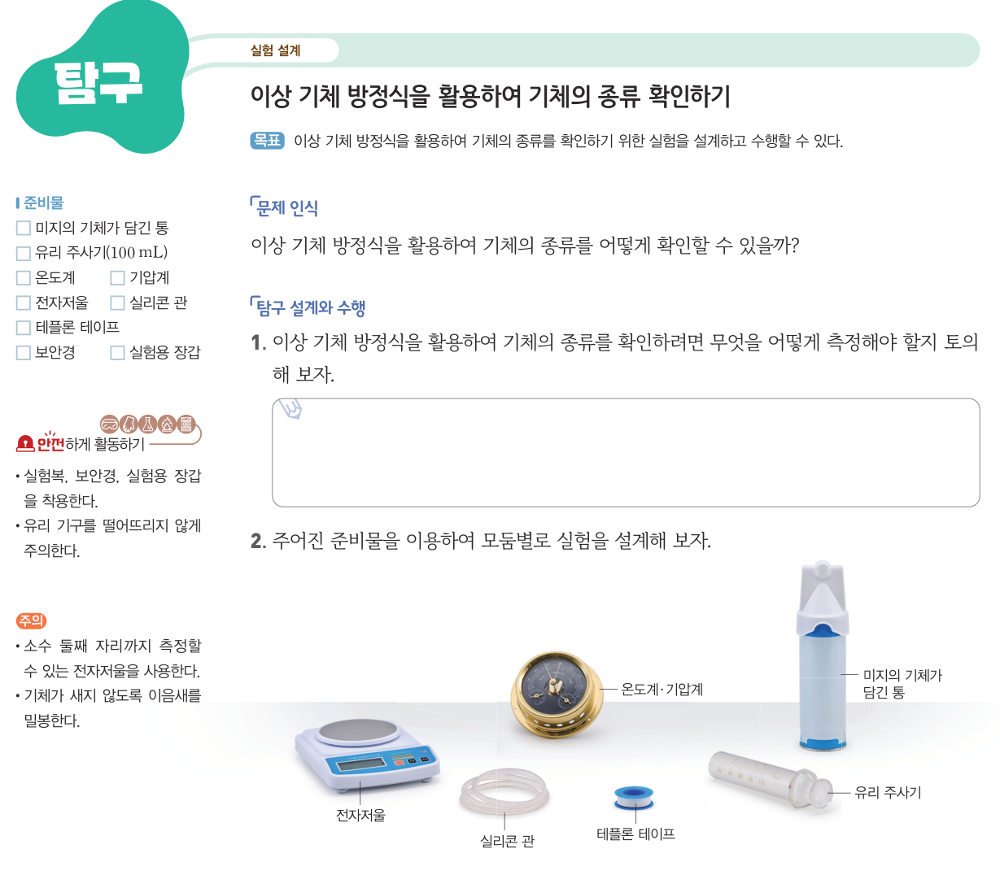
비상교육 물질과 에너지 Ⅰ-1 탐구 ‘이상 기체 방정식을 활용하여 기체의 종류 확인하기’
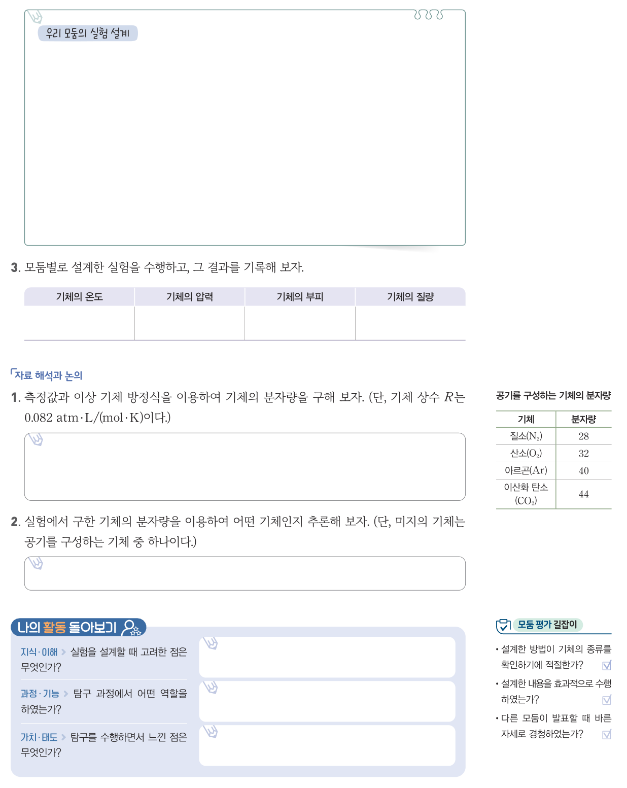
같은 탐구 (계속)
■ 모범 답안
n = w/M이므로 M = wRT/PV이다. M = 0.13 × 0.082 × 298 / (1.000 × 0.1000) ≈ 32 → 산소(O₂).
실제 세계: 기체통에서 포집한 미지의 기체, 모형: 이상 기체 방정식(PV = nRT), 예측: 기체가 O₂라면 이 조건에서 100 mL의 질량은 약 0.13 g, 데이터: 측정한 질량 감소 0.13 g. 예측과 데이터가 일치하므로 ‘이 기체는 O₂이다’라는 가설(모형의 적용)이 지지된다(일치하지 않으면 모형 적용을 기각).
분자량이 같은 서로 다른 물질이 있을 수 있으므로 분자량만으로는 종류를 확정할 수 없다(후보 범위 제한 등 추가 정보 필요). 방법 예: 주사기로 여러 번 포집하여 총부피와 총 질량을 크게 하거나, 더 정밀한 저울을 쓰고 반복 측정한다. ㉢ 근사적으로, ㉣ 디지털 소양.
■ 해설
[핵심 이론] 기어리의 모형 기반 추론: 실제 세계의 대상과 모형(이론적 가설)의 적합성을 판단하기 위해, 모형으로부터 예측을 이끌어 내고 관찰 데이터와 비교한다. 일치하면 모형이 그 대상에 적합하다는 판단이 지지되고, 불일치하면 기각된다. 이상 기체 방정식은 실제 기체에 근사적으로 적용되는 모형이다.
[교육과정 근거] [12물에01-01] 성취기준(이상 기체 방정식을 근사적으로 활용), 탐구 활동(이상 기체 방정식을 활용하여 기체의 종류를 확인할 수 있는 실험 설계하고 수행하기), 고려 사항(모의실험으로 디지털 소양 함양).
[채점 포인트] M = wRT/PV와 32(O₂). 기어리 4요소의 정확한 대응과 ‘예측–데이터 일치 → 모형 적용 지지’. ㉡은 분자량이 같은 다른 물질의 존재. 작은 질량 문제는 포집량을 늘리는 구체적 방법. ㉢ 근사적으로, ㉣ 디지털 소양.
[출제 포인트] 교과서 탐구(주사기 100 mL, 0.13 g, 25 ℃, 1 atm → 32)를 기어리 모형 기반 추론(2024 화학 B3)으로 구성. 공식 오기(지도서 예시 오류를 학생 오류로 재구성), ‘분자량만으로 확정’ 오개념, 작은 질량 측정의 오차, [12물에01-01]·고려 사항 원문 빈칸(근사적으로, 디지털 소양).
2번 모범 답안 및 해설 [2026 화학 B5 (POE 모형·분자 간 상호작용, 물질과 에너지) · 2017 화학 논술 (POE 예측의 역할) · 2022 화학 A6 (추리) 변형]★★★★★
■ 관련 교과서 탐구 — [미래엔 물질과 에너지] Ⅰ-3 탐구 ‘수소 화합물의 끓는점에 영향을 주는 요인 추론하기’
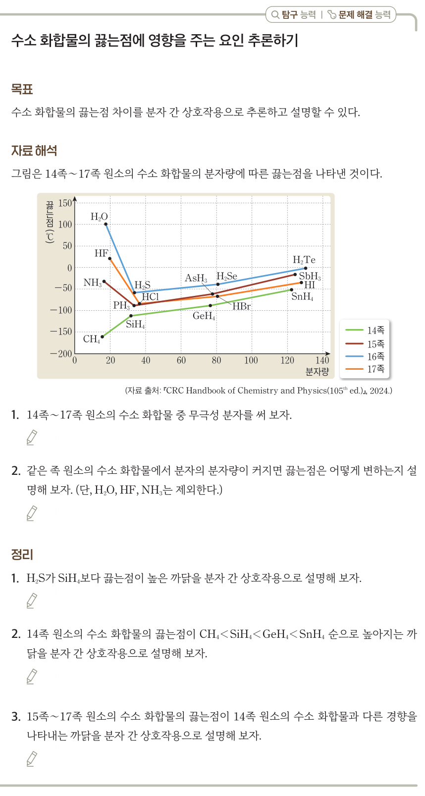
미래엔 물질과 에너지 Ⅰ-3 탐구 ‘수소 화합물의 끓는점에 영향을 주는 요인 추론하기’같은 탐구 (계속)
■ 모범 답안
(가) 예상(Predict), (나) 관찰(Observe), (다) 설명(Explain). 이유와 함께 예상하게 하면 학생의 선개념이 드러나고, 자료와 불일치할 때 인지 갈등이 일어나 설명을 수정하려는 동기가 생긴다(예상에 대한 책임감·호기심 유발).
㉠ SiH₄ −112, PH₃ −88, HCl −85, H₂S −60 ℃로 분자량이 비슷해도 끓는점이 크게 다르다. CC: 쌍극자 모멘트가 더 큰 HCl보다 H₂S의 끓는점이 높으므로 쌍극자 모멘트만으로 판단할 수 없다(분자의 크기·모양, 분산력의 기여가 함께 작용). 설명: 분자량이 비슷해 분산력은 비슷하지만, 무극성인 SiH₄는 분산력만 작용하여 가장 낮고, 극성 분자인 PH₃·HCl·H₂S는 쌍극자·쌍극자 힘이 더해져 끓는점이 높다.
NH₃(−33 ℃)는 PH₃·AsH₃보다는 높지만 SbH₃(−17 ℃)보다 낮으므로 ‘모두 높다’는 틀렸다. 수정: “H₂O와 HF는 같은 족에서 끓는점이 가장 높고, NH₃는 분자량에 비해 끓는점이 비정상적으로 높다.” ㉢ 끓을 때는 분자 사이의 상호작용(수소 결합 등)이 끊어질 뿐 분자 내 공유 결합(O–H)은 끊어지지 않는다(수증기도 H₂O 분자). ㉣ 분자 간 상호작용, ㉤ 수소 화합물.
■ 해설
[핵심 이론] POE(예상–관찰–설명): 예상 단계에서 근거와 함께 공언한 선개념을 관찰 결과와 비교하게 하여 인지 갈등을 일으키고, 설명 단계에서 개념을 수정한다. 분자량이 비슷하면 분산력이 비슷하므로, 극성(쌍극자·쌍극자 힘)과 수소 결합의 유무가 끓는점 차이를 만든다. 쌍극자 모멘트의 크기만으로 끓는점을 판단할 수는 없다.
[교육과정 근거] [12물에01-03] 성취기준(물질이 액체로 존재할 수 있는 이유를 분자 간 상호작용으로 이해하고 액체의 종류에 따른 끓는점 차이 설명), 탐구 활동(수소 화합물의 끓는점에 영향을 주는 요인 추론하기).
[채점 포인트] POE 세 단계 대응과 ‘이유와 함께 예상’의 의미(선개념 표면화·인지 갈등). ㉠·CC 비판은 표의 수치(SiH₄ −112 … H₂S −60, HCl < H₂S)로. ㉡은 SbH₃ > NH₃를 근거로 수정, ㉢은 분자 간 상호작용 vs 분자 내 결합. ㉣ 분자 간 상호작용, ㉤ 수소 화합물.
[출제 포인트] 미래엔 탐구(14~17족 수소 화합물의 분자량–끓는점 그래프)를 POE(2026 화학 B5, 2017 화학)로 구성. 분자량 같으면 끓는점 같음·쌍극자 모멘트 크기 오개념(HCl < H₂S), 두 교과서 공통의 NH₃ 과잉 진술(SbH₃가 더 높음)을 오류 찾기로 재구성, [12물에01-03] 성취기준·탐구 활동 원문 빈칸.
3번 모범 답안 및 해설 [2022 화학 B3 (브루너 표현 양식·자료 변환) · 2023 화학 A6 (증기 압력·브루너) · 2025 화학 B5 (측정 타당도) 변형]★★★★★
■ 관련 교과서 탐구 — [비상교육 물질과 에너지] Ⅱ-2 디지털 탐구 ‘설탕물의 끓는점과 어는점 측정하기’ (온도 센서·스프레드시트)
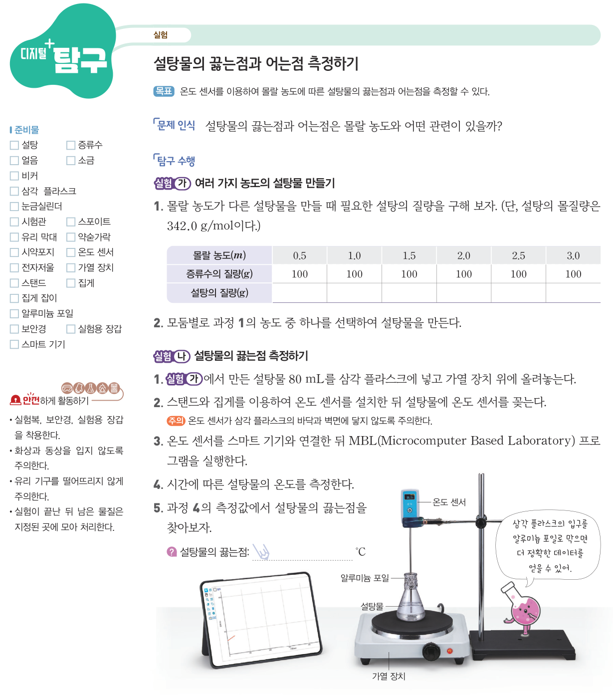
비상교육 물질과 에너지 Ⅱ-2 디지털 탐구 ‘설탕물의 끓는점과 어는점 측정하기’
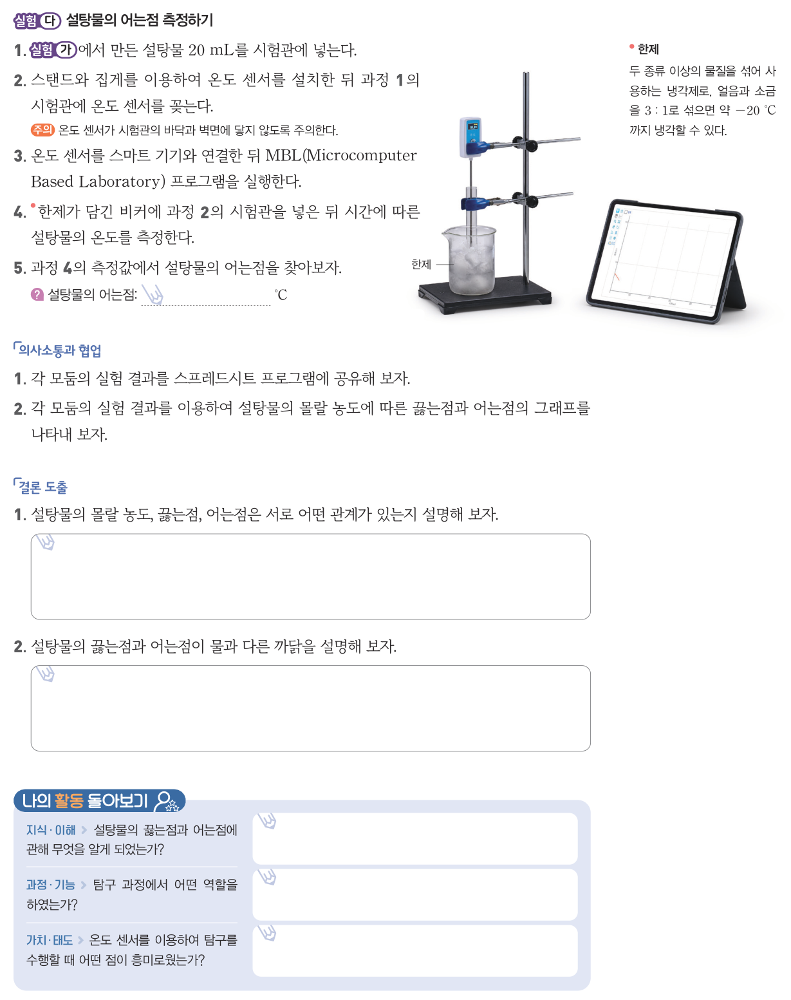
같은 탐구 (계속)
■ 모범 답안
(가) 작동적(행동적) 표상, (나) 영상적 표상, (다) 상징적 표상. 학습자의 인지 발달과 이해 과정에 맞추어 구체적 조작 경험에서 시각적 표현, 추상적 기호로 나아가야 개념을 의미 있게 구성할 수 있기 때문이다.
어는점 내림은 1.86 × m(예: 1.0 m에서 1.86 ℃)과 거의 일치한다. 끓는점 오름은 0.51 × m(1.0 m에서 0.51 ℃, 3.0 m에서 1.53 ℃)의 약 2배로 크게 측정되었다. 입구를 막지 않고 오래 가열하여 물이 증발하면서 용액이 진해져(몰랄 농도 증가) 끓는점이 계속 올라갔기 때문이다(입구를 알루미늄 포일로 막고 온도가 일정하게 유지되는 구간을 끓는점으로 정함).
끓는점 오름과 어는점 내림은 용질의 종류와 관계없이 용질 입자 수(몰랄 농도)에만 비례하는 성질이므로, 같은 몰랄 농도의 비전해질 포도당 수용액도 어는점 내림이 같다. ㉢ 몰 분율, ㉣ 데이터 기반.
■ 해설
[핵심 이론] 브루너의 표현 양식: 작동적(행동) → 영상적(그림·그래프) → 상징적(기호·식). 끓는점 오름(ΔT_b = K_b·m)과 어는점 내림(ΔT_f = K_f·m)은 용질의 종류와 무관하게 용질 입자 수에만 의존하는 총괄성이다. 끓는점 측정 시 용매가 증발하면 몰랄 농도가 커져 측정값이 커진다.
[교육과정 근거] [12물에02-02] 성취기준(실험 데이터로 증기압·끓는점·어는점 변화 비교), 해설(몰랄 농도 또는 몰 분율 도입), 고려 사항(디지털 센서로 온도 데이터 수집·저장·처리, 데이터 기반 탐구), 탐구 활동(온도 센서로 설탕물의 끓는점·어는점 측정).
[채점 포인트] 세 표상의 순서 대응과 이유. 어는점 자료는 이론과 일치, 끓는점 자료가 약 2배임을 수치로 비교하고 ‘증발 → 농도 증가’로 설명. ㉡은 ‘용질 종류 무관’. ㉢ 몰 분율, ㉣ 데이터 기반.
[출제 포인트] 교과서 디지털 탐구(0.5~3.0 m 설탕물, 온도 센서, 스프레드시트 표1·표2)의 끓는점 자료가 Kb의 약 2배인 점을 오차 분석으로 활용, 브루너 표현 양식(2022 B3, 2023 A6 화학)으로 구성. ‘수소 결합 방해’ 오개념(용질 종류 의존), [12물에02-02] 성취기준·해설·고려 사항 원문 빈칸(몰 분율, 데이터 기반).
4번 모범 답안 및 해설 [2023 화학 A7 (SAPA 탐구 기능) · 2023 화학 B3 (조작·종속 변인) · 2026 물리 B4 (실험 설계 타당성) 변형]★★★★★
■ 관련 교과서 탐구 — [비상교육 물질과 에너지] Ⅱ-3 탐구 ‘농도와 삼투 현상의 관계 탐색하기’ (실험 설계)
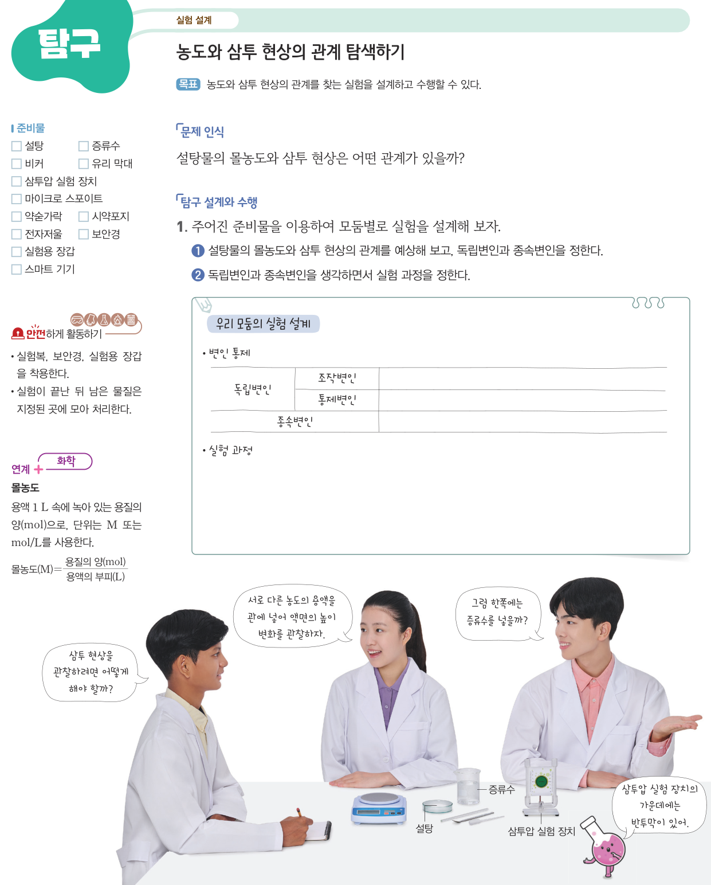
비상교육 물질과 에너지 Ⅱ-3 탐구 ‘농도와 삼투 현상의 관계 탐색하기’
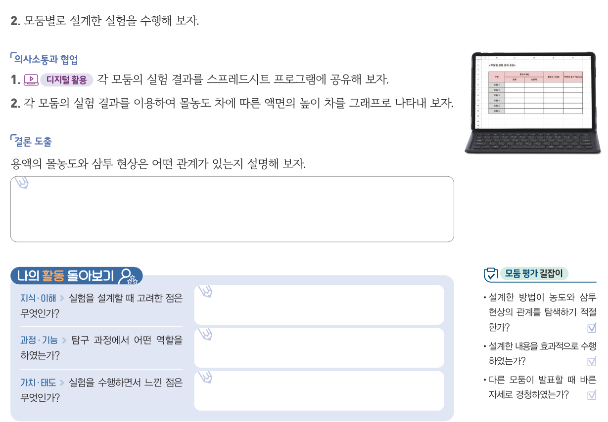
같은 탐구 (계속)
■ 모범 답안
한 가지 농도(1 M)만 만들면 조작 변인인 몰농도가 변하지 않아 농도와 삼투 현상의 관계를 찾을 수 없다(여러 농도의 설탕물을 만들어야 함). 통제 변인 예: 양쪽 용액의 처음 부피(높이), 반투막의 종류와 면적, 측정 시간, 같은 실험 장치.
π = CRT = 1 × 0.082 × 298 ≈ 24 atm으로, 물기둥 약 240 m에 해당하므로 실험실 장치에서 액면 높이가 멈출 때까지(평형) 기다릴 수 없다. 수정 예: 0.05~0.2 M 정도의 묽은 설탕물을 여러 농도로 준비하고, ‘같은 시간(예: 10분) 동안 생긴 액면의 높이 차’를 종속 변인으로 정의하여 측정한다.
π = CRT는 비휘발성·비전해질 용질의 묽은 용액에 적용된다. NaCl은 물에서 Na⁺과 Cl⁻으로 이온화하여 용질 입자 수가 약 2배가 되므로 같은 몰농도의 설탕물보다 삼투압이 크다. ㉤ 삼투현상, ㉥ 학생 중심의.
■ 해설
[핵심 이론] SAPA의 통합 탐구 과정: 문제 인식, 가설 설정, 변인 통제, 조작적 정의, 실험 설계, 자료 해석, 결론 도출. 관계를 찾는 실험은 조작 변인을 여러 수준으로 변화시켜야 하며, 그 외 변인은 통제해야 한다. 판트호프 식 π = CRT는 비휘발성·비전해질 용질의 묽은 용액에 적용된다.
[교육과정 근거] [12물에02-03] 성취기준(용액의 농도에 따른 삼투현상 이해, 일상 사례), 탐구 활동(농도와 삼투현상의 관계를 찾기 위한 실험 설계하고 수행하기), 교수·학습 방법 (나): 교사 중심의 실험보다 학생 중심의 탐구 활동 설계.
[채점 포인트] ㉡은 ‘조작 변인이 변하지 않음’, 통제 변인 2가지(처음 부피, 반투막, 시간 등). π ≈ 24 atm(물기둥 약 240 m)과 ㉢ 불가 이유, 일정 시간 Δh로 조작적 정의 + 묽은 농도 범위. ㉣은 이온화로 입자 수 증가. ㉤ 삼투현상, ㉥ 학생 중심의.
[출제 포인트] 교과서 탐구(설탕물, 삼투압 실험 장치, 모둠 설계 → 스프레드시트 공유)의 예시 설계에 있는 결함(단일 농도, 통제 변인 1개, 1 M에서 약 24 atm)을 SAPA 통합 탐구 과정(2023 화학 A7)·변인(2023 화학 B3)·설계 타당성(2026 물리 B4)으로 구성. 전해질 용액의 삼투압 오개념, [12물에02-03] 성취기준·탐구 활동·교수·학습 방법 원문 빈칸.
5번 모범 답안 및 해설 [2026 화학 A6 (가설-연역적 탐구) · 2026 화학 A5 (실험 과정 오류·오차) · 2015 화학 (교육과정 수준 벗어남: 엔탈피) 변형]★★★★★
가설(경로와 무관하게 ΔH 일정)에서 ‘가설이 옳다면 실험 가의 두 단계 ΔH 합은 실험 나의 ΔH와 같을 것이다’라는 예측을 연역하고, 실험으로 검증하였다. A: Q = 4.2 × 408 × 11.2 ≈ 19.2 kJ, 0.20 mol이므로 ΔH ≈ −96.0 kJ/mol.
① ㉠ 실험 나의 처음 온도(24.0 ℃)가 실험 가(22.0 ℃)와 다르고 염산의 처음 온도를 측정하지 않았다(처음 온도 통제 필요). ② 간이 열량계의 열 손실, 용액의 비열·밀도를 물로 가정, 1 M 염산 200 g(약 196 mL)의 HCl이 약 0.196 mol로 NaOH 0.20 mol보다 적어 한계 반응물이 바뀌는 문제 등. ㉡ 차이(약 1 %)는 측정 오차 범위로 해석할 수 있으므로, 오차 원인을 분석하지 않고 법칙 전체를 기각하는 것은 성급하다.
㉣ 열역학 함수. 성취기준 해설에서 엔탈피는 화학 반응에서 열의 출입과 관련된 내용으로 제한하고 열역학 함수로서의 엔탈피는 다루지 않도록 하였으므로, 상태 함수 유도는 교육과정 범위를 벗어난다.
■ 해설
[핵심 이론] 가설-연역적 탐구: 가설 설정 → 가설로부터 검증 가능한 예측 연역(‘만약 …라면 …일 것이다’) → 실험 → 결과와 예측 비교 → 결론. 헤스 법칙: 반응물과 생성물의 종류와 상태가 같으면 반응 경로와 관계없이 반응 엔탈피의 총합은 일정하다.
[교육과정 근거] [12물에03-02] 성취기준(측정하기 어려운 반응의 엔탈피를 헤스 법칙으로 구함), 탐구 활동(중화 반응으로 헤스 법칙을 확인하는 실험하기), [12물에03-01] 해설(열의 출입으로 제한, 열역학 함수로서의 엔탈피는 다루지 않음).
[채점 포인트] 가설 → 예측 연역의 진술과 A = −96.0 kJ/mol. 설계 문제는 처음 온도 불일치(㉠)와 열 손실·비열 가정·한계 반응물 중 1가지. ㉡은 오차 범위 해석. ㉣ 열역학 함수와 ㉢의 범위 판단.
[출제 포인트] 교과서 탐구(물 200 g, NaOH 8 g, 1 M 염산 200 g, −43.7/−51.5/−96.0)를 가설-연역적 탐구(2026 화학 A6)와 실험 설계 오류(처음 온도 불일치, 한계 반응물, 2026 화학 A5)로 구성. ‘값이 다르면 법칙이 틀림’ 판단, [12물에03-02] 성취기준·[12물에03-01] 해설 원문 빈칸(열역학 함수).
6번 모범 답안 및 해설 [2015 화학 논술 (엔트로피·드라이버 개념 변화) · 2025 화학 A7 (드라이버 생각의 재구성) · 2023 화학 B4 (교육과정 범위 위배) 변형]★★★★★
■ 관련 교과서 탐구 — [비상교육 물질과 에너지] Ⅲ-3 해 보기 ‘저절로 일어나는 변화의 특징 알아보기’ · 탐구 ‘자발적 변화의 특징 찾아보기’
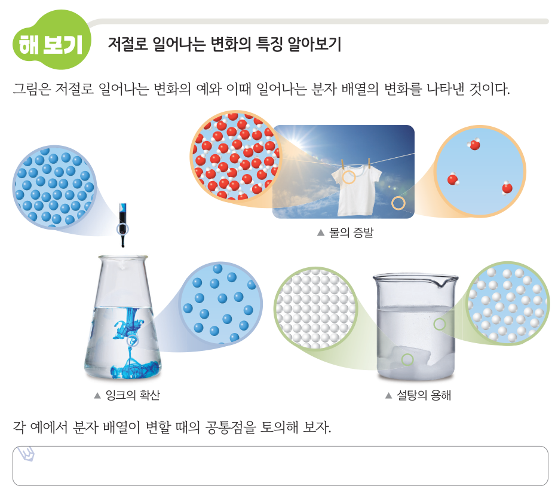
비상교육 물질과 에너지 Ⅲ-3 해 보기 ‘저절로 일어나는 변화의 특징 알아보기’
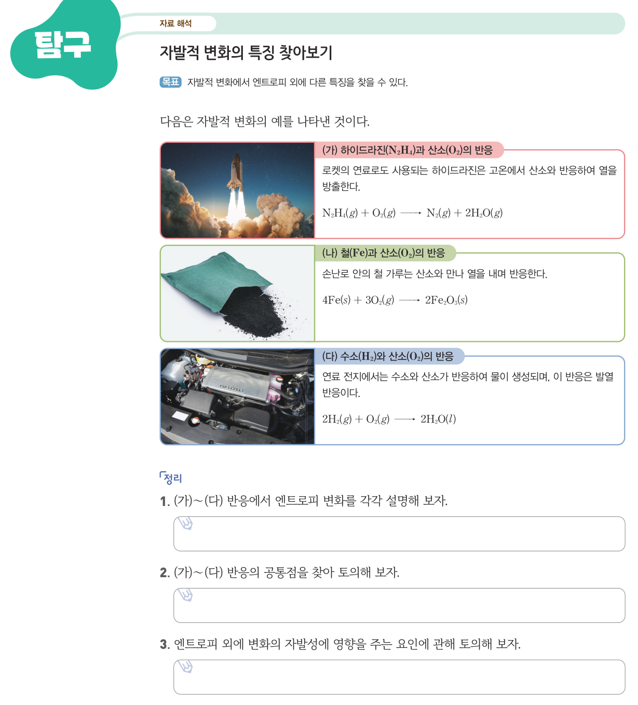
비상교육 물질과 에너지 Ⅲ-3 탐구 ‘자발적 변화의 특징 찾아보기’
■ 모범 답안
(가) 생각의 표현(학생의 선개념을 드러냄), (나) 생각의 재구성 중 갈등 상황에의 노출. ㉠은 흡열 과정인데도 자발적으로 일어나는 반례로, ‘자발적 변화 = 발열’이라는 생각과 모순되는 상황을 제시하여 인지 갈등을 일으킨다.
하이드라진 연소: 기체 분자 수 2 → 3으로 증가하여 ΔS > 0, 손난로: 기체가 소모되어 고체가 생성되므로 ΔS < 0. 두 반응 모두 열을 방출(ΔH < 0)하며, 엔탈피 감소가 자발성에 기여한다(ΔS < 0인 손난로 반응도 발열 효과가 커서 자발적). ㉡ 기체가 두 용기 전체로 퍼진 상태가 입자들이 차지하는 공간이 넓고 배열이 더 무질서하므로 엔트로피가 더 크다(일부가 아닌 계 전체를 보아야 함).
㉣ 깁스 자유 에너지, ㉤ 정성적. 성취기준 해설에서 깁스 자유 에너지를 다루지 않고 엔트로피는 정성적으로 다루도록 하였으므로, ΔG 식을 이용한 정량적 온도 계산은 교육과정 범위를 벗어난다.
■ 해설
[핵심 이론] 드라이버의 개념 변화 학습 모형: 오리엔테이션 → 생각의 표현 → 생각의 재구성(명료화와 교환 → 갈등 상황에의 노출 → 새로운 생각의 구성 → 새로운 생각의 평가) → 생각의 적용 → 생각의 검토. 자발성은 엔탈피 감소와 엔트로피 증가가 함께 관여하며, 계 전체의 입자 배열을 기준으로 엔트로피를 판단한다.
[교육과정 근거] [12물에03-03] 성취기준(엔탈피와 엔트로피의 변화로 자발성 설명), 해설(깁스 자유 에너지는 다루지 않으며, 엔트로피는 정성적으로 다룸).
[채점 포인트] (가) 생각의 표현, (나) 갈등 상황에의 노출과 ㉠의 반례 역할. ΔS 부호 2개와 ‘발열(ΔH < 0)이 자발성에 기여’. ㉡은 계 전체가 퍼진 상태가 엔트로피 큼. ㉣ 깁스 자유 에너지, ㉤ 정성적과 ㉢ 범위 판단.
[출제 포인트] 교과서 해 보기(잉크 확산·증발·용해)와 탐구(하이드라진·손난로·연료 전지의 ΔS 비교)를 드라이버 모형(2015 논술, 2025 화학 A7)으로 구성. ‘자발 = 발열’, ‘모인 기체가 더 무질서’ 오개념, [12물에03-03] 성취기준·해설 원문 빈칸(깁스 자유 에너지, 정성적)과 범위 판단(2023 화학 B4).
7번 모범 답안 및 해설 [2021 화학 A5 (피아제 형식적 조작기) · 2026 물리 B4 (실험 설계 타당성·열평형) · 2025 화학 A5 (디지털 소양) 변형]★★★★☆
■ 관련 교과서 탐구 — [비상교육 물질과 에너지] Ⅳ-1 탐구 ‘압력 센서를 활용한 기체 압력 및 반응 속도 측정하기’
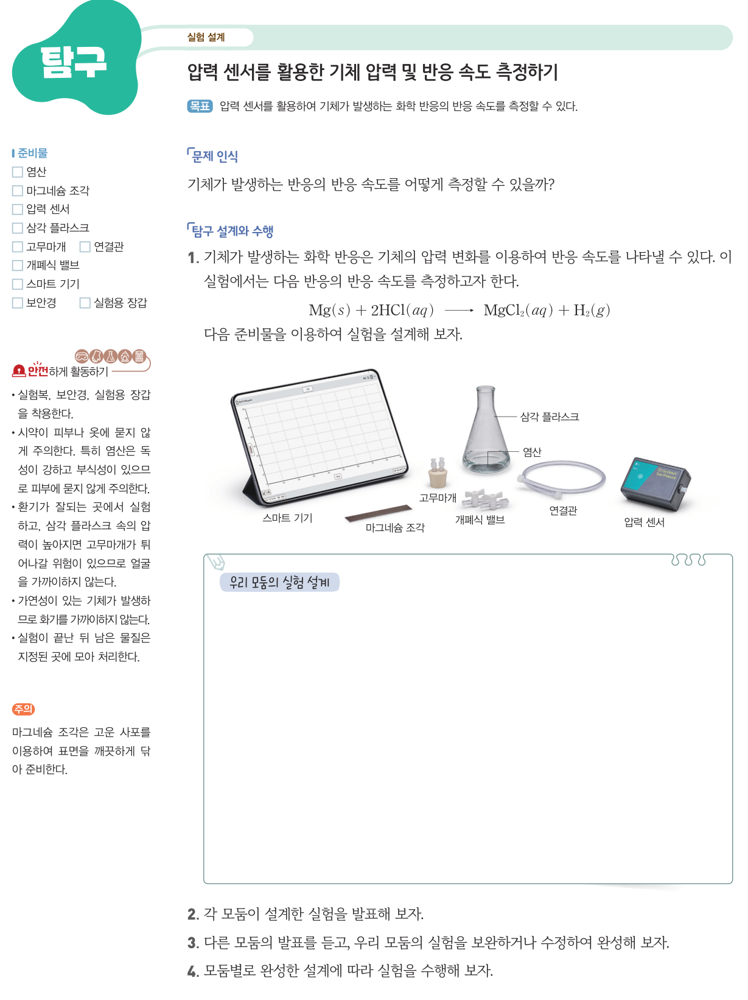
비상교육 물질과 에너지 Ⅳ-1 탐구 ‘압력 센서를 활용한 기체 압력 및 반응 속도 측정하기’같은 탐구 (계속)
■ 모범 답안
(106.6 − 102.5) kPa ÷ 10 s = 0.41 kPa/s. 온도와 부피가 일정하면 P = (n/V)RT이므로 기체의 압력은 몰 농도에 비례하여, 압력 증가 속도가 H₂ 생성 속도를 나타낸다.
변인 통제 도식: 조작 변인(염산의 농도) 외의 변인을 같게 해야 하는데, Mg의 형태(리본/가루, 표면적)와 양이 함께 달라져 속도 차이의 원인을 농도로 판단할 수 없다. 수정: 같은 질량·같은 형태(같은 길이의 리본)의 Mg와 같은 부피의 염산을 사용하고 농도만 다르게 한다.
이 반응은 발열 반응이어서 온도가 올라가면 기체가 팽창하여 압력이 추가로 증가하므로, 압력 증가가 모두 H₂ 생성 때문은 아니다. 보완: 플라스크를 항온 수조에 넣어 온도를 일정하게 유지하거나 온도 센서를 함께 사용해 보정한다. ㉢ 실시간 데이터.
■ 해설
[핵심 이론] 피아제 형식적 조작기의 사고 도식: 변인 통제, 비례 논리, 확률적 사고, 상관 논리, 조합적 논리. 변인 통제 도식은 하나의 변인만 바꾸고 나머지를 같게 하여 인과를 판단하는 사고이다. 온도·부피가 일정하면 기체의 압력은 몰 농도에 비례한다.
[교육과정 근거] (4) 반응 속도 탐구 활동(센서를 활용하여 반응 속도를 측정하는 실험 설계하고 수행하기), 고려 사항(디지털 탐구 도구로 실시간 데이터를 수집·저장·처리하여 디지털 소양 함양).
[채점 포인트] 0.41 kPa/s와 P ∝ n/V 근거. ㉠은 ‘변인 통제’와 Mg의 형태·양 불통제, 수정안. ㉡은 발열 → 온도 상승 → 압력 증가와 항온 조건. ㉢ 실시간 데이터.
[출제 포인트] 교과서 탐구(압력 센서, Mg + HCl, 0.41 kPa/s)를 피아제 변인 통제 도식(2021 화학 A5)과 실험 타당성(발열로 인한 압력 증가, 2026 물리 B4)으로 구성. [12물에] 탐구 활동·고려 사항 원문 빈칸(실시간 데이터).
8번 모범 답안 및 해설 [2026 화학 B4 (오수벨: 유의미 수용 vs 유의미 발견) · 2022 화학 A7 (귀납) · 2025 화학 B3 (반응 속도, 물질과 에너지) 변형]★★★★★
■ 관련 교과서 탐구 — [비상교육 물질과 에너지] Ⅳ-1 탐구 ‘반응물의 농도로 반응 속도 나타내기’ · 탐구 ‘1차 반응의 특징 알아보기’
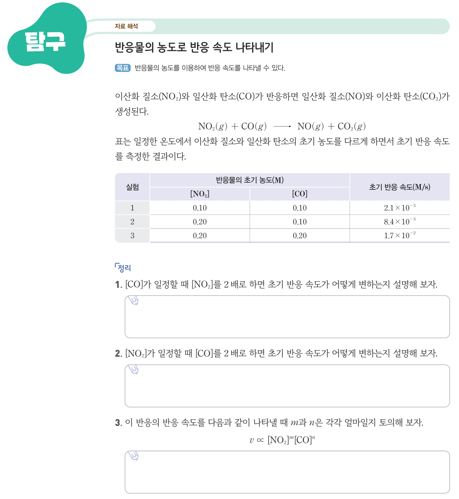
비상교육 물질과 에너지 Ⅳ-1 탐구 ‘반응물의 농도로 반응 속도 나타내기’
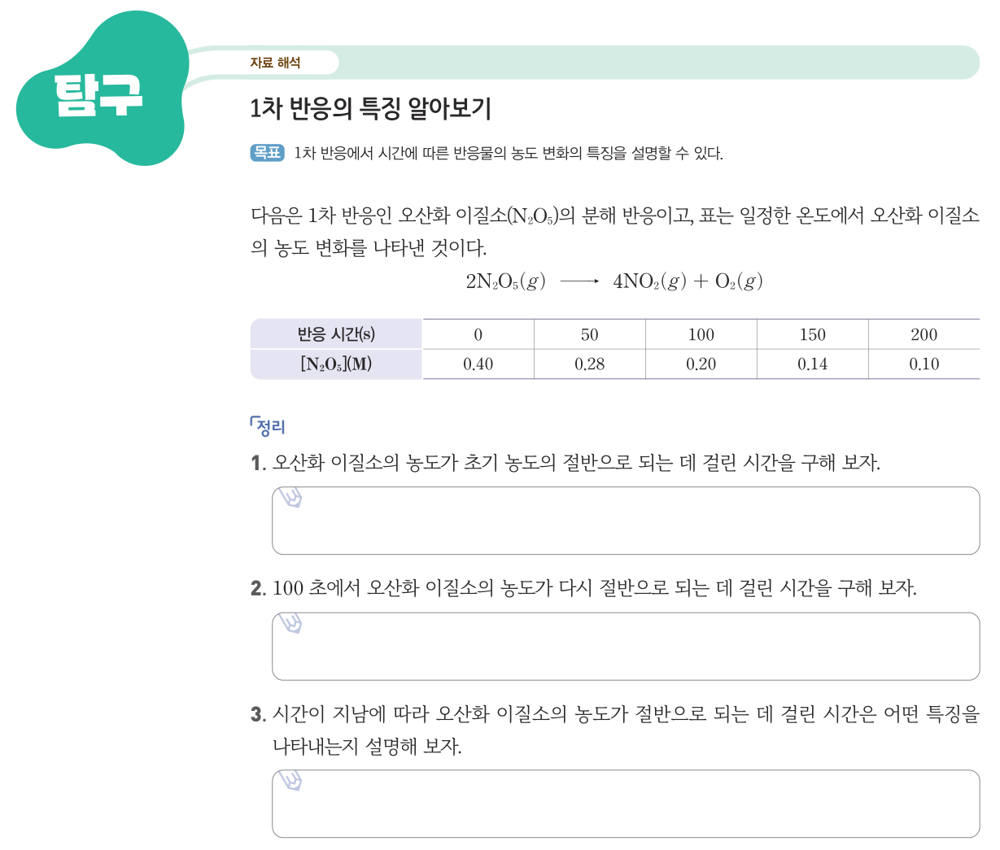
비상교육 물질과 에너지 Ⅳ-1 탐구 ‘1차 반응의 특징 알아보기’
■ 모범 답안
교사 A: 유의미 수용 학습(학습할 내용을 최종 형태로 제시), 교사 B: (유의미) 발견 학습(학습자가 자료에서 규칙을 스스로 발견). 조건: ① 학습 과제의 논리적 유의미가(실사성·구속성)와 학습자 인지 구조 내 관련 정착 지식의 존재(잠재적 유의미가), ② 학습자의 유의미 학습 태세(새 내용을 기존 지식과 관련지으려는 의도).
[CO] 일정, [NO₂] 2배 → 속도 4배이므로 NO₂ 2차, [NO₂] 일정, [CO] 2배 → 속도 2배이므로 CO 1차: v = k[NO₂]²[CO]. 반응 차수는 반응식의 계수가 아니라 실험으로 결정된다. N₂O₅: 0.40 → 0.20 M(100 s), 0.20 → 0.10 M(100 s)이므로 반감기 100 s로, 처음 농도와 관계없이 일정하다(1차 반응).
㉢ 적분 속도식. 성취기준 해설에서 적분 속도식 유도는 다루지 않고 자료 해석으로 반감기를 찾도록 하였으므로, 미분 방정식 유도는 교육과정 범위를 벗어난다.
■ 해설
[핵심 이론] 오수벨: 학습은 제시 방식에 따라 수용/발견, 인지 구조와의 관련 여부에 따라 유의미/기계적으로 구분된다. 유의미 학습의 조건은 학습 과제의 논리적 유의미가, 학습자의 관련 정착 지식(잠재적 유의미가), 유의미 학습 태세이다. 반응 차수는 반응식의 계수가 아니라 실험 자료로 결정된다.
[교육과정 근거] [12물에04-01] 성취기준(자료 해석을 통하여 반응 속도식을 구함), [12물에04-02] 성취기준(1차 반응 반감기의 농도 무관성)과 해설(적분 속도식 유도는 다루지 않으며 자료 해석으로 반감기를 찾도록 함).
[채점 포인트] A 유의미 수용, B 발견과 유의미 조건 2가지. m = 2, n = 1 계산과 ‘차수 ≠ 계수’. 반감기 100 s의 농도 무관성. ㉢ 적분 속도식과 ㉡ 범위 판단.
[출제 포인트] 교과서 자료 해석 탐구(NO₂ + CO 초기 속도, N₂O₅ 반감기 100 s)를 오수벨 유의미 수용 vs 발견 학습(2026 화학 B4)으로 대비. ‘차수 = 계수’ 오개념, [12물에04-01] 성취기준·[12물에04-02] 해설 원문 빈칸(적분 속도식).
9번 모범 답안 및 해설 [2026 생물 B5 (조작적 정의) · 2017 화학 (조작적 정의·변인 통제) · 2026 물리 B4 (귀납·외삽) 변형]★★★★☆
■ 관련 교과서 탐구 — [비상교육 물질과 에너지] Ⅳ-3 탐구 ‘농도와 반응 속도의 관계 실험하기’ (싸이오황산 나트륨 + 염산)
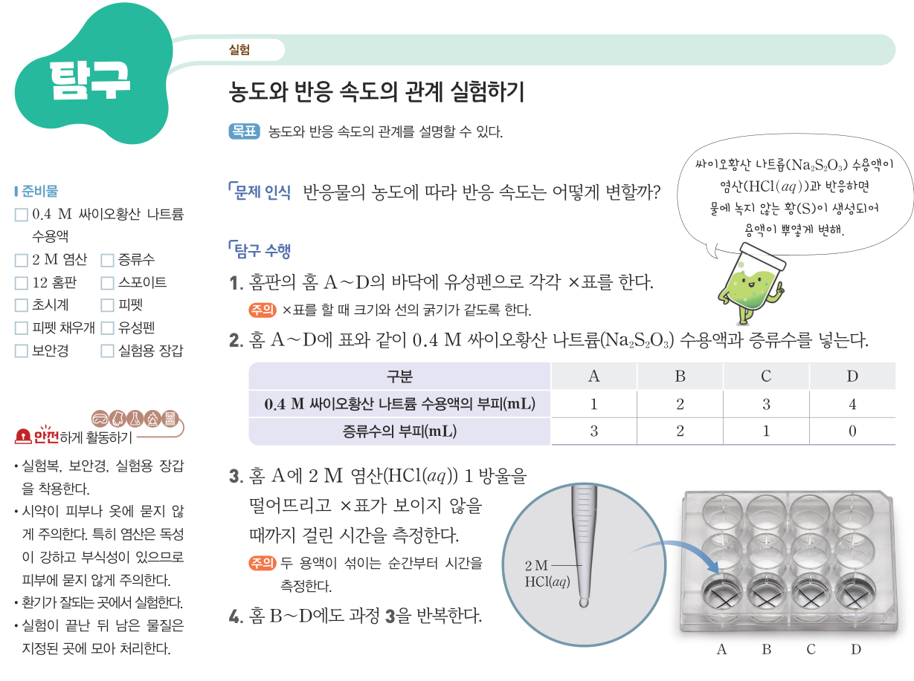
비상교육 물질과 에너지 Ⅳ-3 탐구 ‘농도와 반응 속도의 관계 실험하기’
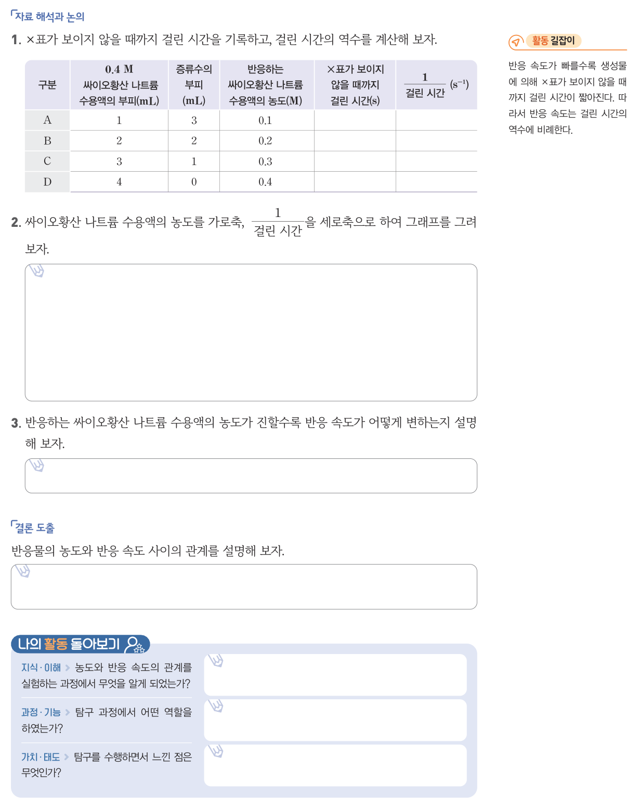
같은 탐구 (계속)
■ 모범 답안
㉠은 종속 변인인 반응 속도를 측정 가능한 관찰로 나타낸 조작적 정의이다(일정량의 황이 생성되어 ×표가 가려질 때까지의 시간이 짧을수록 반응 속도가 빠름). 전제: ×표를 가리는 데 필요한 황(S)의 양이 모든 홈에서 같아야 한다(같은 크기의 ×표, 같은 용액 부피).
×표가 가려지는 데 필요한 황의 양이 홈마다 달라져, 측정 시간이 농도가 아닌 ×표의 차이에 영향을 받으므로 결과를 비교할 수 없게 된다(측정의 타당도 저하). ㉣ 조작적으로.
농도가 0.1 → 0.4 M(4배)일 때 1/시간은 0.014 → 0.050 s⁻¹로 약 3.6배이며, 그래프가 원점을 지나는 직선이 아니므로 ‘정확히 정비례’가 ‘증명’되었다고 할 수 없다. 네 번의 측정으로 얻은 귀납적 결론은 확률적이며 반례에 의해 수정될 수 있다. 적절한 결론: ‘이 실험 범위에서 Na₂S₂O₃ 농도가 클수록 반응 속도가 빠르다.’
■ 해설
[핵심 이론] 조작적 정의: 변인을 측정·관찰 가능한 조작이나 절차로 정의하는 것(반응 속도 → ×표가 가려질 때까지 걸린 시간의 역수). 귀납적 일반화는 관찰 사례에서 규칙을 이끌어 내지만 확실성을 보장하지 못하며, 측정 범위 밖으로 확장하거나 ‘증명’으로 표현하는 것은 한계가 있다.
[교육과정 근거] [12물에04-04] 성취기준(농도, 온도, 촉매에 따른 반응 속도 변화), 탐구 활동(농도, 온도, 촉매와 반응 속도의 관계를 탐구하는 실험하기), 내용 체계 과정·기능(변인을 조작적으로 정의하고, 탐구 설계하기).
[채점 포인트] ㉠ = 종속 변인의 조작적 정의와 ‘같은 양의 황’ 전제. ㉡은 측정 기준 불일치(타당도). ㉢은 0.014 → 0.050(약 3.6배)과 원점 미통과로 비판하고, 측정 범위로 한정한 결론. ㉣ 조작적으로.
[출제 포인트] 교과서 탐구(×표, 0.4 M Na₂S₂O₃ 1~4 mL, 2 M 염산 1방울, 70/40/25/20 s)를 조작적 정의(2017 화학, 2026 생물 B5)와 귀납의 한계(2026 물리 B4)로 구성. 1/t 자료가 정비례하지 않는 점, ×표 크기 통제, [12물에04-04] 성취기준·탐구 활동, 내용 체계 과정·기능 원문 빈칸(조작적으로).
10번 모범 답안 및 해설 [2025 화학 A7 (하슈웨 C1·C2·R1·R2) · 2022 화학 B4 (촉매) · 2026 물리 B5 (인지 갈등 유형) 변형]★★★★★
■ 관련 교과서 탐구 — [비상교육 물질과 에너지] Ⅳ-3 탐구 ‘온도와 반응 속도의 관계 실험하기’ · 탐구 ‘촉매와 반응 속도의 관계 실험하기’
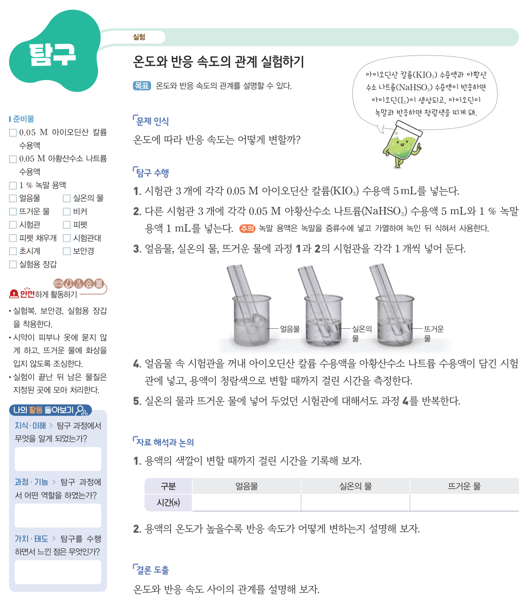
비상교육 물질과 에너지 Ⅳ-3 탐구 ‘온도와 반응 속도의 관계 실험하기’
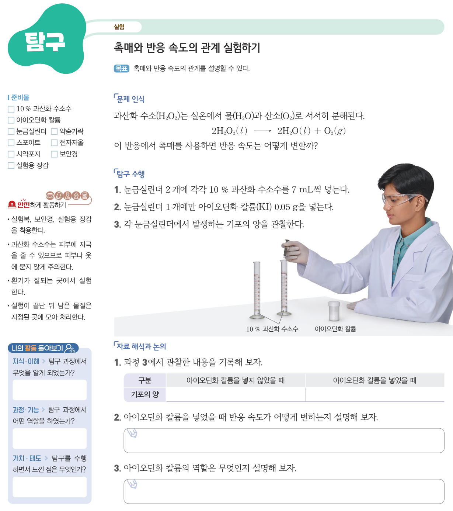
비상교육 물질과 에너지 Ⅳ-3 탐구 ‘촉매와 반응 속도의 관계 실험하기’
■ 모범 답안
C1: ‘온도에 따른 속도 증가는 충돌 횟수 증가 때문이다.’ R2: 10 ℃ 상승 시 충돌 횟수는 약 2 %만 늘지만 속도는 약 2배가 되는 현상(C1으로 설명 불가), C2: 활성화 에너지 이상의 에너지를 가진 분자 수 증가(운동 에너지 분포 곡선). 교사의 자료는 C1과 R2 사이의 갈등 1을 유발한다(이후 C1과 C2의 갈등 2).
온도가 높아지면 분자 운동 에너지 분포 곡선이 오른쪽으로 넓게 퍼져, 활성화 에너지(Ea) 이상의 에너지를 가진 분자의 비율이 크게 증가하므로 유효 충돌이 많아져 반응 속도가 빨라진다(Ea 자체는 변하지 않음).
촉매는 반응물과 반응하여 활성화 에너지가 더 낮은 새로운 반응 경로를 만들고 반응 후 다시 생성(재생)되므로 소모되지 않는 것이다(예: I⁻ + H₂O₂ → IO⁻ + H₂O, IO⁻ + H₂O₂ → I⁻ + H₂O + O₂). 촉매는 반응 엔탈피(반응열)를 변화시키지 않는다. ㉢ 활성화 에너지, ㉣ 촉매나 효소.
■ 해설
[핵심 이론] 하슈웨의 인지 갈등 모형: C1(선개념)·R1(C1으로 설명되는 현상), C2(과학 개념)·R2(C1으로 설명되지 않고 C2로 설명되는 현상). 갈등 1은 C1–R2, 갈등 2는 C1–C2. 온도가 높아지면 E_a 이상의 에너지를 가진 분자 비율이 크게 늘어 반응 속도가 빨라진다. 촉매는 반응에 참여해 E_a가 낮은 경로를 제공하고 재생되며, ΔH는 변하지 않는다.
[교육과정 근거] [12물에04-03] 성취기준(유효 충돌과 활성화 에너지의 의미), 탐구 활동(농도, 온도, 촉매와 반응 속도의 관계를 탐구하는 실험하기), 고려 사항(생태전환교육 연계, 촉매나 효소로 환경 문제 해결).
[채점 포인트] C1, R2, C2를 정확히 대응하고 ‘갈등 1’. ㉠은 운동 에너지 분포와 E_a 이상 분자 수. ㉡은 ‘촉매도 반응에 참여하고 재생’과 ‘ΔH 불변’ 두 가지. ㉢ 활성화 에너지, ㉣ 촉매나 효소.
[출제 포인트] 교과서 탐구(시계 반응 얼음물·실온·뜨거운 물, H₂O₂ 7 mL + KI 0.05 g)와 ‘충돌 횟수 증가’·‘촉매는 반응하지 않음/ΔH 변화’ 오개념(지도서 기술의 문제점 재구성)을 하슈웨 모형(2025 화학 A7)으로 구성. [12물에04-03] 성취기준·고려 사항 원문 빈칸(활성화 에너지, 촉매나 효소).
11번 모범 답안 및 해설 [2023 화학 A7 (헤론 탐구 수준) · 2025 화학 B5 (측정 신뢰도) · 2026 화학 A5 (실험 오류) 변형]★★★★★
■ 관련 교과서 탐구 — [비상교육 화학 반응의 세계] Ⅰ-1 탐구 ‘여러 가지 산과 염기 수용액의 pH 측정하기’
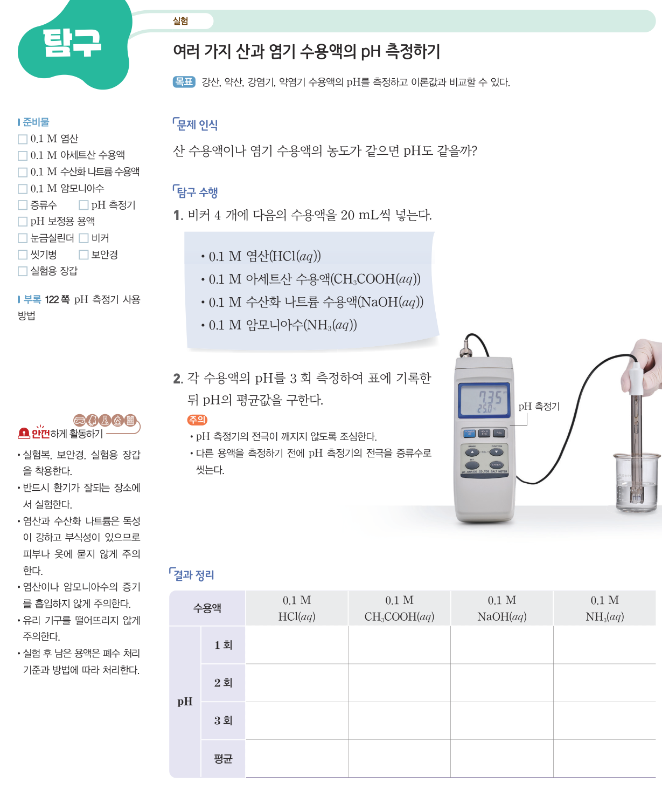
비상교육 화학 반응의 세계 Ⅰ-1 탐구 ‘여러 가지 산과 염기 수용액의 pH 측정하기’
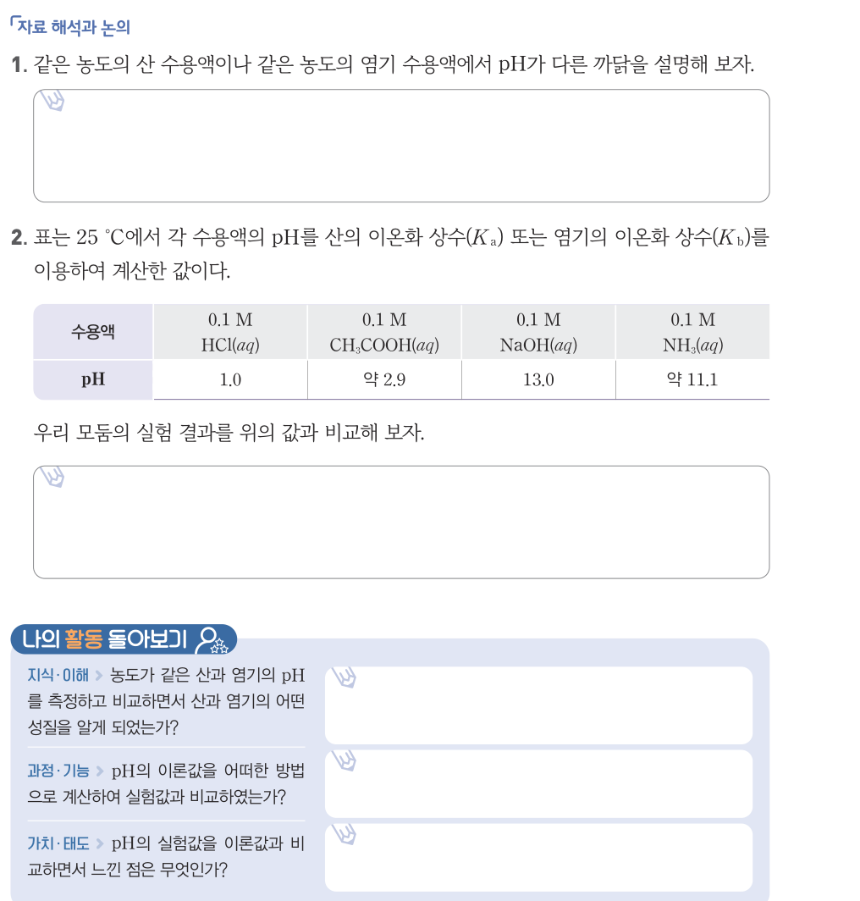
같은 탐구 (계속)
■ 모범 답안
교사 A: 1수준(문제와 방법은 제시, 결과·결론은 학생이 찾음). 교사 B: 2수준(문제만 제시, 방법과 결과는 학생이 정함). 0수준은 결과까지 제시, 3수준은 문제까지 학생이 정한다.
전극에 남은 염산이 아세트산 수용액에 섞여 [H₃O⁺]가 커져서 pH가 작게 측정되었다. 개선: 용액을 바꿀 때마다 전극을 증류수로 헹구고 물기를 닦은 뒤 측정한다. 반복 측정·평균은 측정의 신뢰도(일관성, 우연 오차 감소)를 높인다.
아세트산은 약산이라 일부만 이온화한다. x²/(0.1 − x) ≈ x²/0.1 = 1.8×10⁻⁵ → x = [H₃O⁺] ≈ 1.3×10⁻³ M → pH ≈ 2.9(5 % 근사 성립). ㉢ 이론값, ㉣ 화학 평형.
■ 해설
[핵심 이론] 헤론의 탐구 수준: 0수준(문제·방법·결과 모두 제시, 확인 실험), 1수준(문제·방법 제시), 2수준(문제만 제시), 3수준(문제·방법·결과 모두 학생). 약산은 일부만 이온화하므로 [H₃O⁺] = √(K_a·C)로 근사한다. 반복 측정과 평균은 측정의 신뢰도를 높인다.
[교육과정 근거] (1) 산 염기 평형 탐구 활동(0.1M의 강산, 강염기, 약산, 약염기 수용액의 pH를 측정하고 이론값과 비교하기), 고려 사항(브뢴스테드-라우리 정의에서 약산·약염기 pH까지 화학 평형의 개념이 바탕).
[채점 포인트] A 1수준, B 2수준과 제시 요소 근거. ㉠은 전극 미세척(염산 혼입)과 개선, 반복 측정 = 신뢰도. ㉡ 수정은 K_a를 이용한 계산 과정과 pH ≈ 2.9. ㉢ 이론값, ㉣ 화학 평형.
[출제 포인트] 교과서 탐구(0.1 M 네 용액 pH 3회 측정, 이론값 1.0/2.9/13.0/11.1)를 헤론 탐구 수준(2023 화학 A7)으로 대비하고, 전극 미세척 오류(2026 화학 A5)·반복 측정의 신뢰도(2025 화학 B5), 약산 완전 이온화 오개념을 구성. [12반응] 탐구 활동·고려 사항 원문 빈칸(이론값, 화학 평형).
12번 모범 답안 및 해설 [2021 화학 A5 (비고츠키 비계·ZPD) · 2025 화학 A5 (컴퓨팅 사고력·디지털 소양) · 2021 화학 A7 (당량점 = 중성 오개념) 변형]★★★★★
■ 관련 교과서 탐구 — [비상교육 화학 반응의 세계] Ⅰ-2 탐구 ‘중화 적정 곡선 나타내기’ (디지털 탐구: MBL pH 센서)
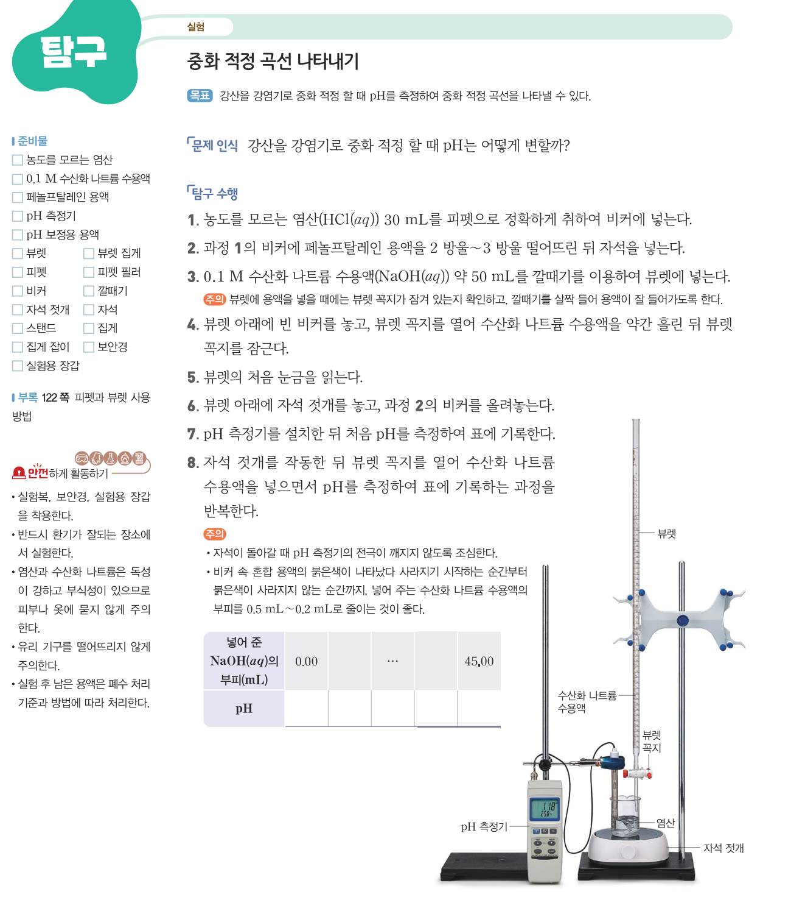
비상교육 화학 반응의 세계 Ⅰ-2 탐구 ‘중화 적정 곡선 나타내기’
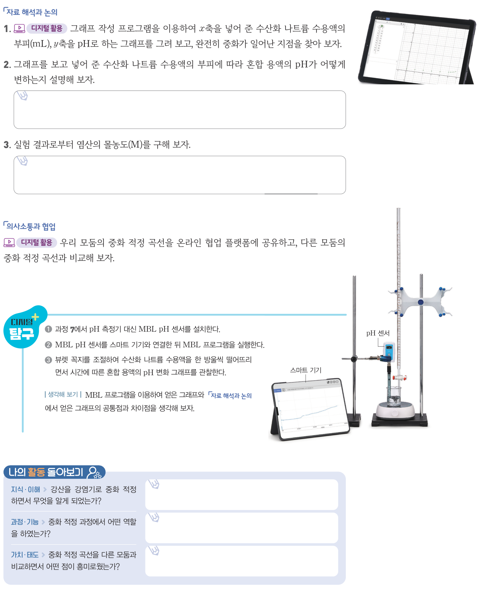
같은 탐구 (계속)
■ 모범 답안
ZPD는 혼자 해결할 수 있는 실제적 발달 수준과 도움을 받아 해결할 수 있는 잠재적 발달 수준 사이의 영역이다. 교사는 (가) 발문으로 사고의 방향을 제시하고 (나) 함께 시범을 보이며 비계를 제공하였다. (다)는 학생이 스스로 할 수 있게 되자 비계를 점진적으로 제거(fading)하여 자기 조절로 넘기는 과정이다.
MBL 그래프의 가로축은 시간이며, NaOH를 넣는 속도가 일정하지 않으면 시간이 넣은 NaOH의 부피에 비례하지 않으므로 시간으로는 중화점의 부피를 알 수 없다(가로축을 NaOH 부피로 변환해야 함). 중화점 30.0 mL: M × 30.0 mL = 0.1 M × 30.0 mL → M = 0.1 M.
약산을 강염기로 적정하면 중화점에서 생성된 CH₃COO⁻이 물과 반응(가수 분해)하여 OH⁻을 내놓으므로 중화점의 pH는 7보다 크다(염기성). ㉢ 중화 적정 곡선, ㉣ 컴퓨팅 사고력.
■ 해설
[핵심 이론] 비고츠키: 근접 발달 영역(ZPD)은 실제적 발달 수준과 잠재적 발달 수준 사이의 영역이며, 교사·유능한 동료의 비계(발문, 시범, 부분 수행)가 학습을 돕는다. 학습자가 숙달되면 비계를 점차 제거하여 자기 조절로 이양한다. 약산–강염기 적정의 중화점은 생성된 짝염기의 가수 분해로 염기성이다.
[교육과정 근거] [12반응01-03] 성취기준(중화 적정 실험의 pH 변화를 데이터에 근거하여 해석), 탐구 활동(실험 데이터에 근거하여 중화 적정 곡선 시각화하기), 고려 사항(수학적 사고에 기반한 컴퓨팅 사고력과 디지털 소양).
[출제 포인트] 교과서 탐구(30 mL 염산, 0.1 M NaOH, pH 1.1→7.1→12.3)와 디지털 탐구(MBL ‘시간–pH’)의 자료 변환 문제를 비고츠키 비계(2021 화학 A5)로 구성. 중화점 = 중성 오개념(2021 화학 A7), 탐구 활동·고려 사항 원문 빈칸(중화 적정 곡선, 컴퓨팅 사고력, 2025 화학 A5).
13번 모범 답안 및 해설 [2016 화학 (CH₃COONa 가수 분해) · 2017 화학 논술 (포스너 조건) · 2026 화학 B3 (포스너 유용성) 변형]★★★★★
■ 관련 교과서 탐구 — [비상교육 화학 반응의 세계] Ⅰ-3 탐구 ‘여러 가지 염 수용액의 액성 알아보기’
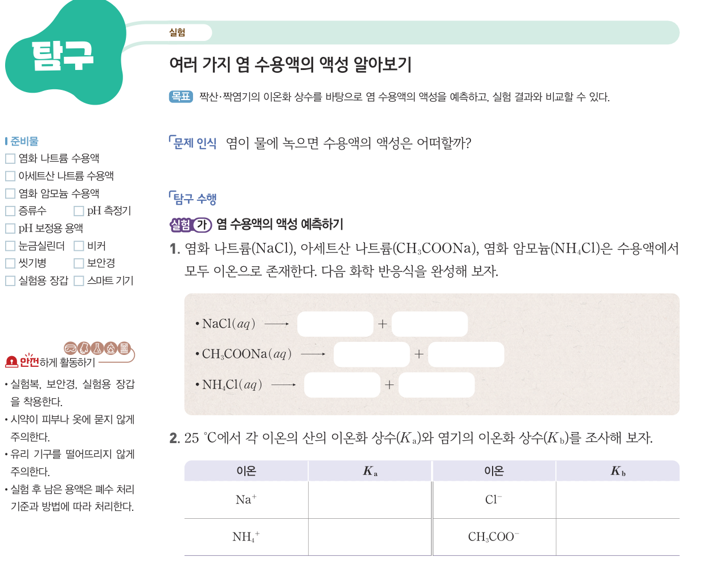
비상교육 화학 반응의 세계 Ⅰ-3 탐구 ‘여러 가지 염 수용액의 액성 알아보기’
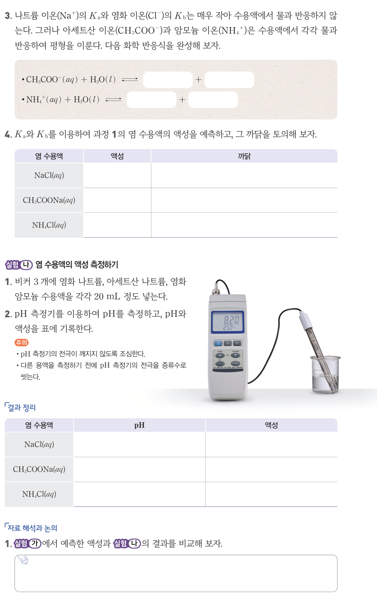
같은 탐구 (계속)
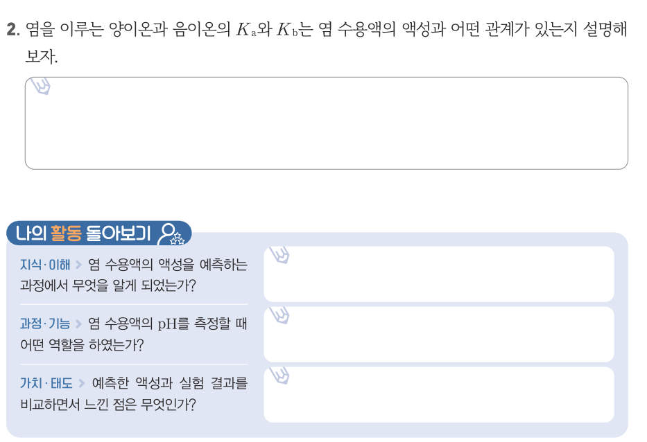
같은 탐구 (계속)
■ 모범 답안
(가) 기존 개념에 대한 불만족: ‘염은 모두 중성’이라는 생각으로 설명할 수 없는 측정 결과를 접하게 한다. (다) 유용성(생산성): 새 개념(가수 분해)으로 새로운 상황(NaHCO₃)을 예측·설명할 수 있음을 경험하게 한다. ((나)는 이해 가능성·그럴듯함)
㉠ Cl⁻은 강산(HCl)의 짝염기이다. Na⁺과 Cl⁻은 물과 거의 반응하지 않으므로 중성이다. ㉡ ‘산성염’은 화학식에 내놓을 수 있는 H가 남아 있다는 분류일 뿐 수용액의 액성과 무관하다. HCO₃⁻의 Kb(2.2×10⁻⁸)가 Ka(4.7×10⁻¹¹)보다 커서 OH⁻을 내놓는 반응이 우세하므로 염기성이다.
㉢ 이온화 상수. NH₄⁺의 Ka와 CH₃COO⁻의 Kb가 5.6×10⁻¹⁰으로 같으므로 H₃O⁺과 OH⁻이 생기는 정도가 같아 중성(pH ≈ 7)으로 예측된다.
■ 해설
[핵심 이론] 포스너 등의 개념 변화 조건: 기존 개념에 대한 불만족, 새 개념의 이해 가능성, 그럴듯함, 유용성(생산성). 염 수용액의 액성은 양이온의 K_a와 음이온의 K_b의 상대적 크기로 결정된다(가수 분해). ‘산성염/염기성염’은 화학식에 남은 H·OH에 따른 분류로 액성과 무관하다.
[교육과정 근거] [12반응01-04] 성취기준(이온화 상수를 이용하여 염의 가수 분해 설명), 탐구 활동(짝산 짝염기의 이온화 상수를 바탕으로 염 수용액의 액성을 예측하고 실험 결과와 비교하기).
[출제 포인트] 교과서 탐구(NaCl, CH₃COONa, NH₄Cl 예측 후 측정)와 제산제 NaHCO₃ 맥락을 포스너 개념 변화 조건(2017·2026 화학)으로 구성. 짝산·짝염기 용어 혼동, ‘산성염 = 산성’ 오개념, [12반응01-04] 성취기준·탐구 활동 원문 빈칸(이온화 상수).
14번 모범 답안 및 해설 [2026 생물 B4 (선행조직자: 설명 조직자 vs 비교 조직자) · 2026 화학 B4 (오수벨 유의미 학습) · 2021 화학 A6 (성취기준 해설 범위) 변형]★★★★★
■ 관련 교과서 탐구 — [비상교육 화학 반응의 세계] Ⅰ-4 탐구 ‘물과 완충 용액의 pH 변화 비교하기’
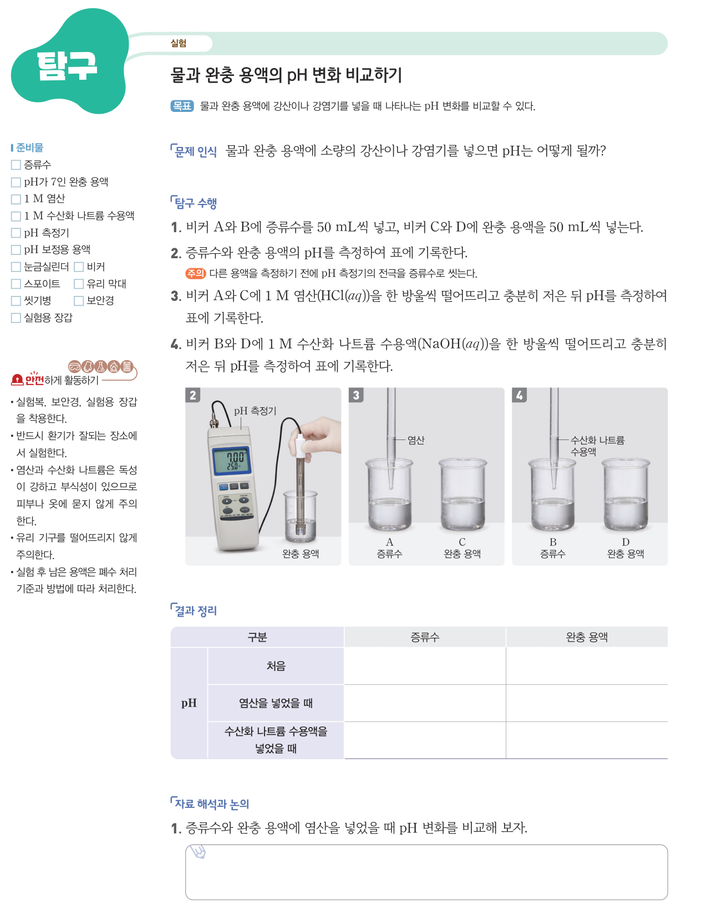
비상교육 화학 반응의 세계 Ⅰ-4 탐구 ‘물과 완충 용액의 pH 변화 비교하기’
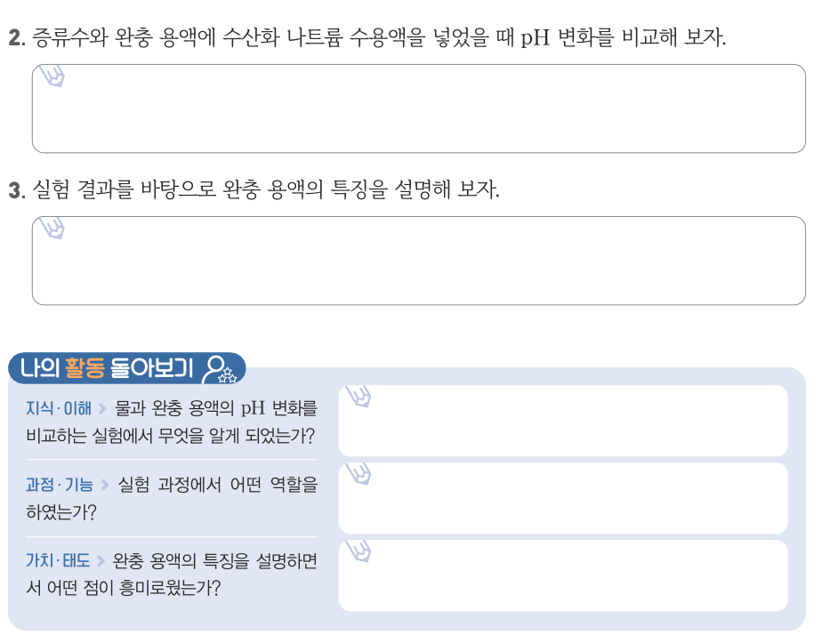
같은 탐구 (계속)
■ 모범 답안
비교 조직자. 학습자에게 친숙한 개념(르샤틀리에 원리)과 새 학습 내용(완충 작용)의 유사점과 차이점을 비교하게 하여 변별을 돕는다. 설명 조직자는 학습 내용이 완전히 낯설 때 포괄적인 상위 개념을 먼저 설명하는 것이다.
공기 중의 CO₂가 녹아 탄산이 생기므로 증류수의 pH는 7보다 약간 작을 수 있다(측정기 고장이 아님). 5×10⁻⁵ mol ÷ 0.050 L = 1.0×10⁻³ M → pH = 3.0. 산을 넣으면 CH₃COO⁻ + H₃O⁺ → CH₃COOH + H₂O, 염기를 넣으면 CH₃COOH + OH⁻ → CH₃COO⁻ + H₂O로 넣어 준 H₃O⁺·OH⁻이 소모되어 pH 변화가 작다.
㉢ pH 계산, ㉣ 중요성. 성취기준 해설에서 완충 작용은 복잡한 pH 계산을 지양하고 생체 내 완충 용액의 중요성을 중심으로 다루도록 하였으므로, pH 계산 반복 문제는 해설의 취지에 맞지 않는다(혈액 완충 등 생체 사례 중심으로 지도).
■ 해설
[핵심 이론] 오수벨의 선행조직자: 설명 조직자(낯선 내용에 앞서 포괄적 상위 개념 제시)와 비교 조직자(친숙한 내용과 새 내용의 유사점·차이점 비교로 변별 촉진). 완충 용액은 약산과 그 짝염기(또는 약염기와 그 짝산)로 이루어져 소량의 산·염기를 소모하여 pH 변화를 줄인다.
[교육과정 근거] [12반응01-05] 성취기준(화학 평형으로 생체 내 완충 작용 설명, 화학 원리의 신비로움)과 해설(복잡한 pH 계산은 지양하고 생체 내 완충 용액의 중요성 중심), 탐구 활동(강산이나 강염기를 첨가할 때 물과 완충 용액의 pH 변화 비교하기).
[출제 포인트] 교과서 탐구(증류수 6.53→3.74/10.51, 완충 용액 7.11→7.08/7.21)를 오수벨 비교 조직자(2026 생물 B4, 2026 화학 B4)로 구성. 증류수 pH 해석 오류, 한 방울 첨가 이론 pH(3.0), [12반응01-05] 성취기준·해설 원문 빈칸(pH 계산, 중요성)과 범위 판단(2021 화학 A6).
15번 모범 답안 및 해설 [2026 지구 A5 (툴민 논증·논거) · 2022 화학 A7 (동료 평가 준거) · 2024 화학 B5 (과학의 본성) 참고 변형]★★★★☆
■ 관련 교과서 탐구 — [비상교육 화학 반응의 세계] Ⅰ 역량을 키우는 활동 ‘“과호흡 증후군” 건강 정보 기사 작성하기’
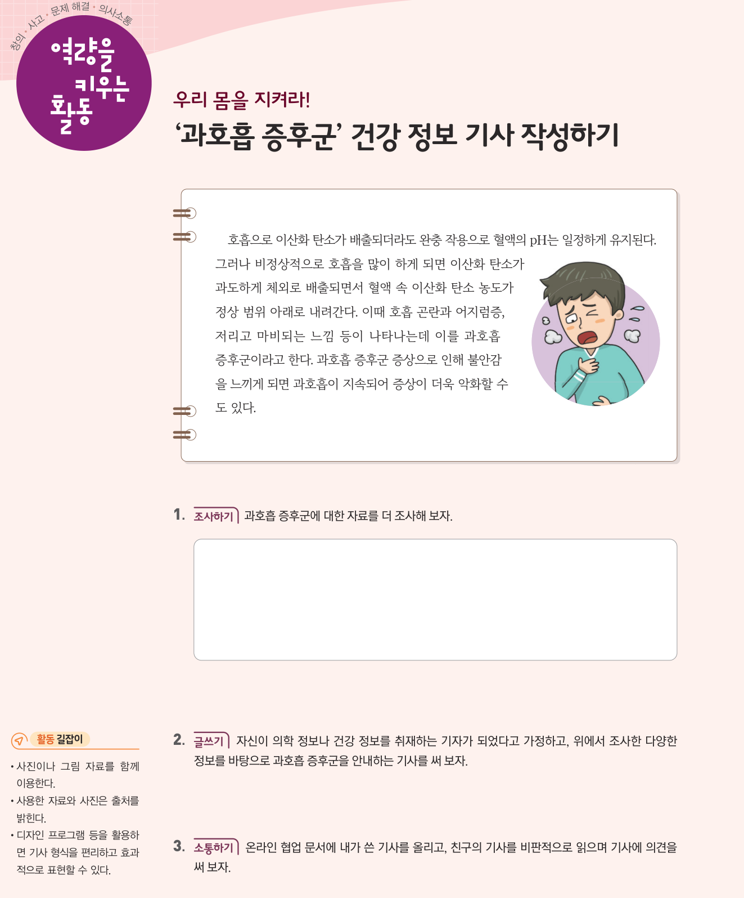
비상교육 화학 반응의 세계 Ⅰ 역량을 키우는 활동 ‘‘과호흡 증후군’ 건강 정보 기사 작성하기’
■ 모범 답안
② 자료(Data), ③ 논거(보장, Warrant), ④는 논거를 지지하는 뒷받침(Backing). 빠진 요소 예: 반박(Rebuttal) 또는 한정어(Qualifier) — “단, 폐 질환이나 대사성 원인이 함께 있는 경우에는 다를 수 있다.” / “대부분의 경우”.
과호흡으로 CO₂가 줄면 CO₂ + H₂O ⇌ H₂CO₃의 평형이 왼쪽으로 이동해 H₂CO₃가 줄고, 이어서 H₂CO₃ + H₂O ⇌ HCO₃⁻ + H₃O⁺의 평형도 왼쪽으로 이동하여 [H₃O⁺]가 감소한다. 따라서 혈액의 pH가 커져 염기성 쪽(알칼리증)으로 치우친다.
㉣ 신비로움, ㉤ 동료 평가. 댓글이 칭찬·외형에 그쳐 과학적 내용에 대한 근거 있는 피드백이 없다. 준거 예: ‘혈액 pH 변화를 화학 평형 이동으로 옳게 설명하였는가?’, ‘주장을 뒷받침하는 자료와 출처를 제시하였는가?’
■ 해설
[핵심 이론] 툴민의 논증 구조: 주장(Claim), 자료(Data), 논거(Warrant), 뒷받침(Backing), 한정어(Qualifier), 반박(Rebuttal). 질 높은 동료 평가는 구체적 준거에 근거한 피드백이어야 한다. 과호흡으로 CO₂가 줄면 탄산 평형이 왼쪽으로 이동해 [H₃O⁺]가 감소한다(호흡성 알칼리증).
[교육과정 근거] [12반응01-05] 성취기준(화학 평형으로 생체 내 완충 작용 설명, 화학 원리의 신비로움). 평가 방법 (라): 개별 평가와 모둠 평가, 자기 평가와 동료 평가 활용.
[채점 포인트] ② 자료, ③ 논거, ④ 뒷받침과 빠진 요소(반박/한정어) 예시. ㉠ 수정은 두 평형의 이동 방향과 pH 증가. ㉣ 신비로움, ㉤ 동료 평가와 내용 중심의 평가 준거.
[출제 포인트] 교과서 역량 활동(과호흡 증후군 기사 작성, 온라인 협업 문서 댓글)을 툴민 논증(2026 지구 A5)과 동료 평가 준거(2022 화학 A7)로 구성. ‘과호흡 = 산성’ 오개념(평형 이동 방향), [12반응01-05] 성취기준·평가 방법 원문 빈칸(신비로움, 동료 평가).
16번 모범 답안 및 해설 [2020 화학 B5 (노박 개념도: 명제·교차 연결) · 2016 화학 (산화·환원 정의 변천) · 2024 화학 A7 (산화·환원 교육과정) 변형]★★★★☆
■ 관련 교과서 탐구 — [비상교육 화학 반응의 세계] Ⅱ-1 해 보기 ‘산화수 변화로 산화와 환원 구분하기’
비상교육 화학 반응의 세계 Ⅱ-1 해 보기 ‘산화수 변화로 산화와 환원 구분하기’
■ 모범 답안
교차 연결(cross-link), 10점. 개념도의 서로 다른 영역(정의 방법 영역과 산화제·환원제 영역)을 의미 있게 연결하는 것은 개념들 사이의 통합적 이해(통합적 조정)를 보여 주므로 가장 높게 평가한다.
H₂S의 S 산화수는 −2이다. SO₂ + 2H₂S → 3S + 2H₂O에서 SO₂의 S는 +4 → 0으로 감소하므로 SO₂는 산화제(H₂S는 환원제)이다. SO₂ + Cl₂ + 2H₂O에서는 S가 +4 → +6으로 증가하므로 SO₂는 환원제이다. 같은 물질도 반응 상대에 따라 역할이 달라지므로 ‘SO₂ = 환원제’로 고정한 ㉠은 부적절하다.
㉤ 동시에, ㉥ 상대적 세기. 반례: HCl + NaOH → NaCl + H₂O에서는 어떤 원소의 산화수도 변하지 않으므로 산화·환원 반응이 아니다.
■ 해설
[핵심 이론] 노박과 고윈의 개념도 채점: 타당한 명제 1점, 위계 5점, 교차 연결 10점, 구체적 예 1점. 교차 연결은 개념도의 서로 다른 부분을 의미 있게 연결해 통합적 조정을 보여 준다. 산화제·환원제는 반응 상대에 따라 상대적으로 정해진다.
[교육과정 근거] [12반응02-01] 성취기준(전자의 이동과 산화수 변화로 산화·환원 이해, 반쪽 반응식)과 해설(산화·환원은 동시에 일어남, 산화제와 환원제는 특정 반응에서 상대적 세기에 의해 결정).
[채점 포인트] ㉡ 교차 연결 10점과 높은 배점 이유. H₂S의 S = −2, 두 반응에서 SO₂의 역할(산화제/환원제)과 ㉠의 문제점. ㉤ 동시에, ㉥ 상대적 세기, ㉣ 반례(HCl + NaOH).
[출제 포인트] 교과서 해 보기(CH₄ 연소·Zn + CuSO₄·HCl + NaOH 판단, 정의 범위 토의)와 SO₂의 이중 역할을 노박 개념도 채점(2020 화학 B5)으로 구성. 산화수 계산 오류(H₂S), ‘모든 반응은 산화·환원’ 오개념, [12반응02-01] 성취기준·해설 원문 빈칸(동시에, 상대적 세기).
17번 모범 답안 및 해설 [2025 화학 B3 · 2022 화학 B4 · 2020 화학 B3 (로슨 경험-귀추적 순환학습) 변형]★★★★★
■ 관련 교과서 탐구 — [비상교육 화학 반응의 세계] Ⅱ-1 탐구 ‘색이 변하는 용액 관찰하기’ (포도당 + NaOH + 메틸렌 블루)
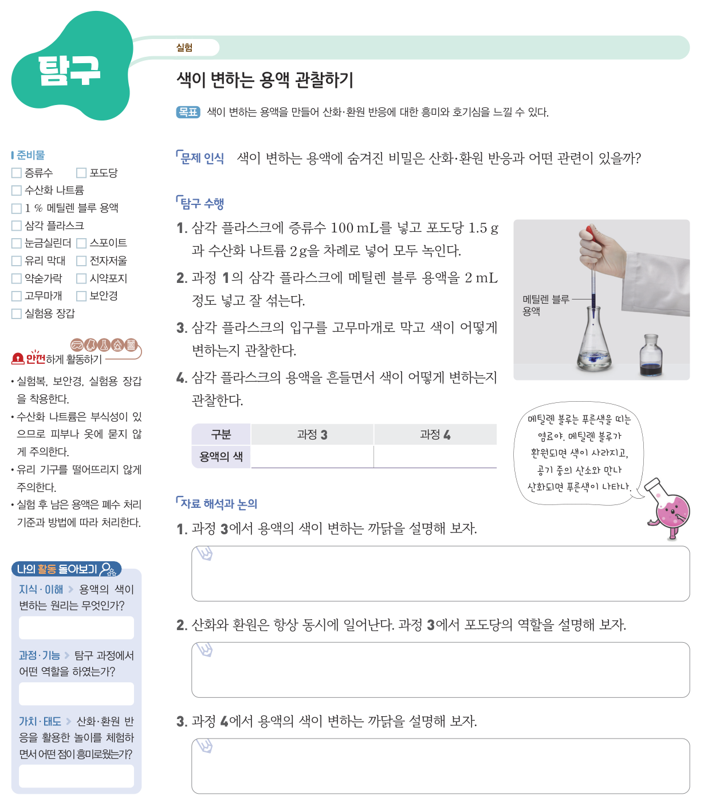
비상교육 화학 반응의 세계 Ⅱ-1 탐구 ‘색이 변하는 용액 관찰하기’
■ 모범 답안
경험-귀추적 순환학습. 탐색 단계에서 학생들이 현상을 관찰하고, 익숙한 현상(사과의 갈변)에서 설명을 빌려 오는 귀추적 추론으로 원인 가설을 제시하였다. 이후 자료를 수집·비교하여 가설을 평가하고 개념을 도입하였다(대안 가설에서 결과를 연역해 통제 실험으로 검증하는 가설-연역적 순환학습과 구별).
마개를 막아 둘 때: 포도당(환원제)이 메틸렌 블루(산화제)에 의해 산화되고, 메틸렌 블루는 환원되어 무색이 된다(산소가 아니라 메틸렌 블루가 산화제). 흔들 때: 공기 중의 O₂(산화제)가 무색의 환원된 메틸렌 블루(환원제)를 산화시켜 다시 파란색이 된다.
㉡ 개방형 질문, ㉢ 심미적. 안전: 수산화 나트륨은 부식성이 있으므로 보안경·장갑을 착용하고 피부에 닿지 않게 한다(남은 용액은 폐수 처리 기준에 따라 처리).
■ 해설
[핵심 이론] 로슨의 순환학습: 서술적(규칙성 기술), 경험-귀추적(현상의 원인을 귀추로 설명하는 가설 생성 → 자료로 평가 → 개념 도입), 가설-연역적(인과 질문 → 대안 가설 → 연역적 예측 → 통제 실험). 귀추는 익숙한 현상의 설명을 빌려 새 현상을 설명하는 추론이다. 산화·환원은 동시에 일어나며 산화제는 자신이 환원된다.
[교육과정 근거] 교수·학습 방법 (나): 지적 호기심과 학습 동기를 유발하는 발문, 개방형 질문 적극 활용. 내용 체계 가치·태도: 과학의 심미적 가치 등. (2) 고려 사항: 개인 보호 장구 착용, 폐수 처리.
[채점 포인트] 경험-귀추적과 학생 G의 귀추(사과 갈변 비유) 근거, 가설-연역적과의 구별. ㉠은 두 과정 각각의 산화제·환원제(메틸렌 블루 / O₂). ㉡ 개방형 질문, ㉢ 심미적, NaOH 안전.
18번 모범 답안 및 해설 [2024 화학 B4 (다니엘 전지: 문제 인식·가설·변인·오개념) · 2025 화학 B5 (측정 타당도) · 2022 화학 B5 (전지 오개념) 변형]★★★★★
■ 관련 교과서 탐구 — [비상교육 화학 반응의 세계] Ⅱ-2 탐구 ‘효율적인 전지의 조건 탐색하기’
비상교육 화학 반응의 세계 Ⅱ-2 탐구 ‘효율적인 전지의 조건 탐색하기’
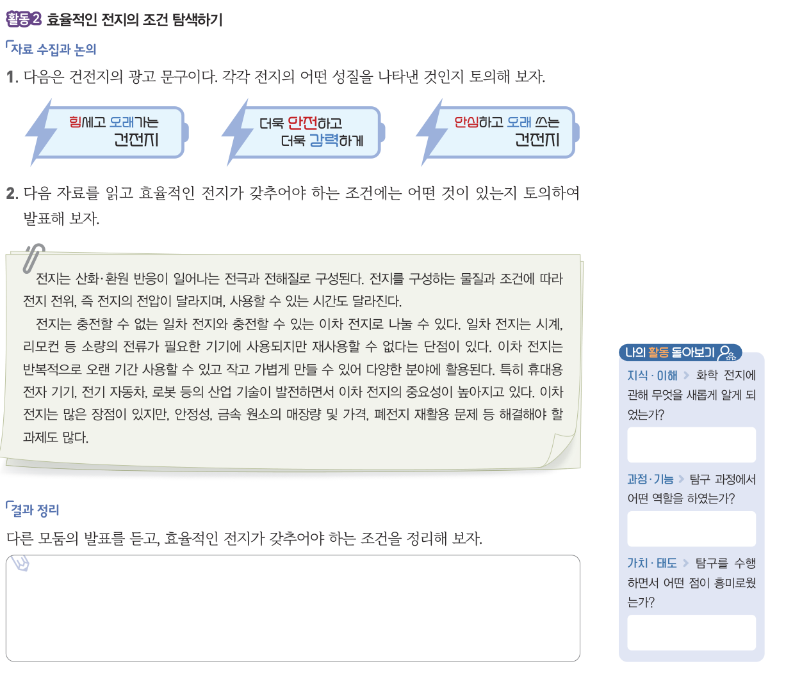
같은 탐구 (계속)
■ 모범 답안
조작 변인: (−)극과 (+)극 금속의 짝(종류), 종속 변인: 전위차. ㉠은 전극 표면 상태·담그는 면적이 통제되지 않아, 전위차의 차이가 금속 종류 때문인지 다른 조건 때문인지 구분할 수 없어 실험의 타당도가 낮아진다(같은 정도로 문지르고 같은 깊이로 담가야 함).
㉡ 표준 환원 전위는 수소 전극을 기준으로 한 상대적인 값이므로, 부호와 관계없이 E°가 다른 두 반쪽 전지를 연결하면 전지가 된다(E°가 큰 Fe 쪽이 (+)극). ㉢ 표준 환원 전위는 세기 성질로, 반응식의 계수에 따라 곱하지 않는다: 0.34 − (−0.76) = 1.10 V. Zn/Fe: −0.45 − (−0.76) = 0.31 V.
㉣ 효율적인 전지, ㉤ 화학 에너지. 원인 예: 금속 표면의 산화막·불순물, 염다리와 용액의 내부 저항, 실제 조건이 표준 상태(25 ℃, 1 M)와 다름.
■ 해설
[핵심 이론] 탐구 설계: 조작 변인 하나만 바꾸고 나머지 변인(농도, 온도, 전극 표면 상태·면적)을 통제해야 내적 타당도가 확보된다. 표준 환원 전위는 표준 수소 전극 기준의 상대값이며 세기 성질이므로 계수를 곱하지 않는다. E°전지 = E°(환원 전극) − E°(산화 전극).
[교육과정 근거] (2) 산화·환원 반응 탐구 활동(금속판과 전해질로 전지를 구성하고 효율적인 전지가 갖추어야 하는 조건 탐색), [12반응02-03] 성취기준·해설(화학 에너지가 전기 에너지로 전환되는 원리).
[채점 포인트] 조작 변인(금속 짝)·종속 변인(전위차)과 ㉠의 통제 실패 → 타당도. ㉡ 상대값, ㉢ 계수 불곱, 1.10 V와 0.31 V. ㉣ 효율적인 전지, ㉤ 화학 에너지, 실측값이 작은 원인.
[출제 포인트] 교과서 탐구(1 M Zn/Cu/Fe 반쪽 전지, 측정 0.90/0.23/0.65 V)를 변인·타당도(2024 화학 B4, 2025 화학 B5)로 구성. ‘E° 부호가 달라야 전지’·‘E°에 계수를 곱함’ 오개념, [12반응] 탐구 활동·해설 원문 빈칸(효율적인 전지, 화학 에너지).
19번 모범 답안 및 해설 [2018 화학 (실험 안전·평가표) · 2016 화학 (분석적 vs 총체적 채점) · 2026 지구 A7 (채점표 유형·피드백) 변형]★★★★☆
■ 관련 교과서 탐구 — [비상교육 화학 반응의 세계] Ⅱ-3 탐구 ‘은도금하기’
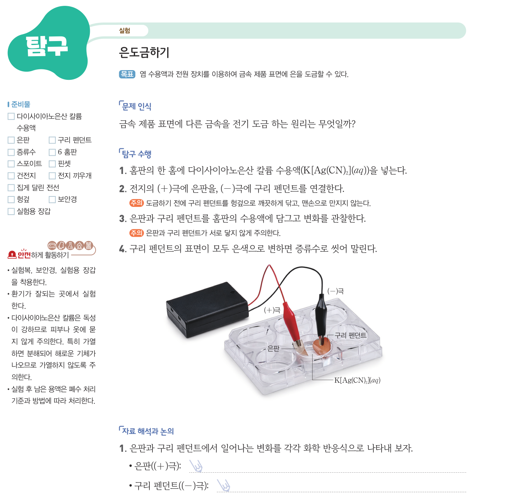
비상교육 화학 반응의 세계 Ⅱ-3 탐구 ‘은도금하기’같은 탐구 (계속)
■ 모범 답안
K[Ag(CN)₂]는 독성이 매우 강하고 가열하면 분해되어 유독한 기체(사이안화 수소 등)가 발생할 수 있으므로 절대 가열하면 안 된다(환기, 보안경·장갑 착용). ㉣ 개인 보호 장구. 대체 실험 예: 황산 구리(Ⅱ) 수용액에서 구리판(+)·철 못(−)으로 구리 도금하기.
전기 분해에서는 (+)극에서 산화, (−)극에서 환원이 일어난다(화학 전지와 반대). (+)극 은판: Ag → Ag⁺ + e⁻(산화), (−)극 펜던트: Ag⁺ + e⁻ → Ag(환원). 은 원자가 직접 옮겨 가는 것이 아니라 은판의 Ag가 산화되어 Ag⁺으로 녹아 나오고, 용액의 Ag⁺이 펜던트 표면에서 환원되어 석출된다(한 금속의 산화와 환원이 동시에 일어남).
총체적 채점(전체적인 인상으로 하나의 점수 부여). 분석적 채점은 평가 요소별 수행 수준을 구체적으로 진단해 피드백을 줄 수 있고 채점자 간 신뢰도가 높아진다. 평가 요소 예: ① 두 전극의 반응식을 산화·환원으로 옳게 쓰는가, ② 전극 연결(은판 (+), 제품 (−))을 옳게 하는가, ③ 보호 장구 착용·폐액 처리를 지키는가.
■ 해설
[핵심 이론] 총체적 채점은 수행 전체를 하나의 점수로 판단하여 빠르지만 진단 정보가 적고, 분석적 채점은 평가 요소별로 점수를 부여해 구체적 피드백과 채점 신뢰도 확보에 유리하다. 전기 분해에서는 (+)극(산화 전극)에서 산화, (−)극에서 환원이 일어난다.
[교육과정 근거] (2) 산화·환원 반응 탐구 활동(염 수용액과 전원 장치를 이용하여 금속 제품 표면에 도금하기), 고려 사항(화학 전지 만들기 및 도금 실험 시 개인 보호 장구 착용, 폐수 처리).
[채점 포인트] 사이안화물 독성·가열 시 유독 기체와 ㉣ 개인 보호 장구, 대체 실험. ㉡·㉢은 두 전극 반응식과 ‘같은 금속의 산화와 환원’. 총체적 채점 → 분석적 채점의 장점과 평가 요소 2가지.
[출제 포인트] 교과서 탐구(K[Ag(CN)₂], 은판 (+), 구리 펜던트 (−), 가열 금지)의 안전 요소(2018 화학)와 전기 분해 전극 오개념, 총체적→분석적 채점(2016 화학, 2026 지구 A7). [12반응] 탐구 활동·고려 사항 원문 빈칸(개인 보호 장구).
20번 모범 답안 및 해설 [2023 화학 B5 (STS 모형 단계 순서) · 2021 화학 A7 (STS 모형) · 2022 화학 B5 (수소 연료 전지·오개념) 변형]★★★★☆
■ 관련 교과서 탐구 — [비상교육 화학 반응의 세계] Ⅱ-4 탐구 ‘지속가능한 발전을 위한 미래 전지 설계하기’
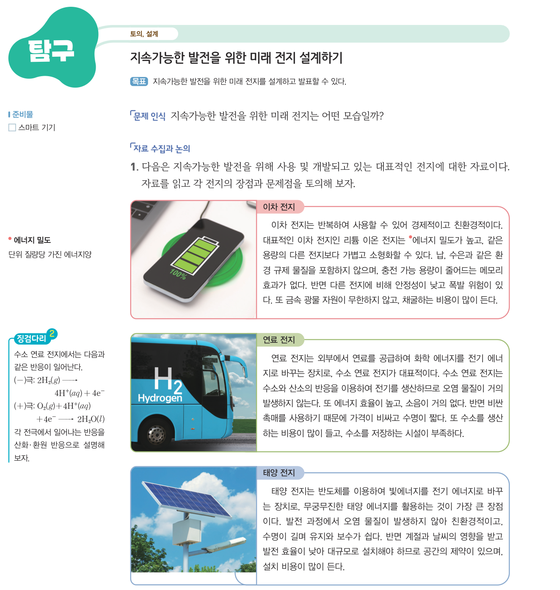
비상교육 화학 반응의 세계 Ⅱ-4 탐구 ‘지속가능한 발전을 위한 미래 전지 설계하기’같은 탐구 (계속)
■ 모범 답안
(다) 초대(문제로의 초대) → (가) 탐색 → (라) 설명 및 해결 방안 제시 → (나) 실행(행동). 실행 단계는 학생이 설계한 해결 방안을 실제 사회에 적용·공유하고 의사 결정을 실천에 옮기는 단계이다.
㉠ 연료 전지는 연료(H₂)와 산화제(O₂)를 계속 공급받아 전기를 만드는 전지로, 충전하여 다시 쓰는 이차 전지와 다르다. ㉡ 전지가 작동할 때의 생성물은 물이지만, 수소를 화석 연료 개질로 만들거나 화석 연료 전력으로 물을 전기 분해하면 생산 과정에서 CO₂가 배출된다(생산 과정 전체를 고려해야 함).
㉢ 지속가능한 발전, ㉣ 동료 평가. 산화: H₂(산화수 0 → +1), 환원: O₂(0 → −2).
■ 해설
[핵심 이론] 야거의 STS 수업 모형: 초대(문제로의 초대) → 탐색 → 설명 및 해결 방안 제시 → 실행. 실행 단계에서 학생은 결정한 해결 방안을 실제 사회에 적용·공유한다. 연료 전지는 연료와 산화제를 계속 공급받아 작동하며, 수소의 친환경성은 생산 과정까지 고려해야 한다.
[교육과정 근거] (2) 산화·환원 반응 탐구 활동(지속가능한 발전을 위한 미래 전지 설계하기), 고려 사항(조사 과제 발표 시 동료 평가 실시).
[채점 포인트] 순서 (다)–(가)–(라)–(나)와 실행 단계 특징. ㉠ 연료 공급 vs 충전, ㉡ 수소 생산 과정의 CO₂. ㉢ 지속가능한 발전, ㉣ 동료 평가, H₂ 산화·O₂ 환원.
[출제 포인트] 교과서 탐구(이차·연료·태양 전지 장단점, 미래 전지 설명서)를 야거 STS 모형 단계 순서(2021 A7, 2023 B5 화학)로 구성. 연료 전지 = 이차 전지 오개념, ‘탄소 배출 0’ 과장(전과정), [12반응] 탐구 활동·고려 사항 원문 빈칸(지속가능한 발전, 동료 평가).